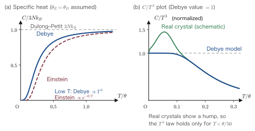
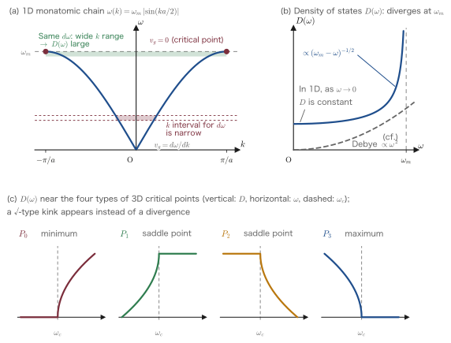

Chapter 14Phonons II — Thermal Properties
In Chapter 13 we saw that the lattice vibrations of a crystal have a dispersion relation $\omega(\qq)$, and that these vibrations behave as energy quanta in units of $\hbar\omega$—phonons. The dispersion relation tells us “what vibrations can exist.” By itself, however, it tells us nothing at all about the thermal properties of a material. At temperature $T$ we must know how strongly those modes are actually excited.
The protagonist of this chapter is a single equation.
$\displaystyle \braket{n} = \frac{1}{\ee^{\hbar\omega/k_BT}-1}$
This equation (the Planck distribution) gives the average number of phonons occupying a mode of angular frequency $\omega$ at temperature $T$. Take it together with the density of states $D(\omega)$, which counts “how many modes have such an $\omega$,” and simply multiply the two and sum: the specific heat comes out. The Debye $T^3$ law and the Dulong–Petit law are all consequences of this multiplication. Conversely, measuring the specific heat is nothing other than counting phonons, and measuring the low-temperature specific heat is equivalent to measuring the speed of sound.
In the second half we go beyond the harmonic approximation. Under the harmonic approximation, a crystal neither undergoes thermal expansion nor has any thermal resistance. A crystal that conducts heat without limit and whose dimensions do not change when its temperature is raised—that is the world the harmonic approximation describes. Real crystals expand when heated and have a finite thermal conductivity precisely because the potential contains terms of third and higher order. The technique of summarizing this anharmonicity in a single number, the Grüneisen parameter, and the calculation that derives the thermal expansion coefficient from it connect directly to the problem of negative thermal expansion, which the Mochizuki Research Group studies by first-principles calculations.
- Summing the partition function $Z$ of a harmonic oscillator as a geometric series, and deriving the Planck distribution from $\braket{n}=-\partial\ln Z/\partial(\beta\hbar\omega)-\frac12$
- How the periodic boundary conditions give the volume per state in $\kk$ space, $(2\pi)^3/V$, and the procedure for converting a sum into an integral
- The density of states $D(\omega)$ in one, two, and three dimensions, and the general formula $D(\omega)=\frac{V}{(2\pi)^3}\int\frac{\dd S}{\abs{\nabla_\kk\omega}}$
- The Debye model: $k_D=(6\pi^2N/V)^{1/3}$, $D(\omega)=3V\omega^2/2\pi^2v^3$, the derivation of $\int_0^\infty x^3\dd x/(\ee^x-1)=\pi^4/15$, and $C_V=\frac{12\pi^4}{5}Nk_B(T/\theta_D)^3$
- The return to the Dulong–Petit value $3Nk_B$ in the high-temperature limit, and its correction terms
- The specific heat of the Einstein model, and why it vanishes exponentially at low temperatures
- van Hove singularities—a classification of the singularities that arise in $D(\omega)$ at points where $\nabla_\kk\omega=0$
- Why neither thermal expansion nor thermal resistance arises without anharmonicity; the Grüneisen parameter $\gamma=-\dd\ln\omega/\dd\ln V$ and $\alpha=\gamma C_V/3BV$
- The thermal conductivity $K=\frac13 Cv\ell$, and the Umklapp process $\qq_1+\qq_2=\qq_3+\GG$ as the origin of thermal resistance
14.1 The Planck Distribution — How Many Phonons Are There?
14.1.1 Starting point: one harmonic oscillator
As we saw in Chapter 13, the lattice vibrations of a crystal can be decomposed into normal modes, and each mode obeys exactly the same equation of motion as an independent one-dimensional harmonic oscillator. If we pick out a single mode (angular frequency $\omega$), its quantum-mechanical energy levels are
The convention of Chapter 13 was to read this integer $n$ as “the number of phonons occupying that mode.” Even for $n=0$ the energy $\hbar\omega/2$ remains. This is the zero-point energy.
The whole problem comes down to one point: in thermal equilibrium at temperature $T$, what is the mean value $\braket{n}$ of $n$?
Why the “mean number”?
When the crystal is put in contact with a heat bath (temperature $T$), each mode exchanges energy with the bath and $n$ fluctuates. At one instant we may have $n=3$, and at the next $n=5$. What a measurement picks up is a long-time average (= an ensemble average in statistical mechanics), so what we need is $\braket{n}$.
And once $\braket{n}$ is known, the mean energy of that mode is $\hbar\omega(\braket{n}+\frac12)$, and the internal energy of the whole crystal can be written as a sum over all modes. The specific heat is obtained simply by differentiating that with respect to $T$. The calculation of the specific heat reduces to the calculation of $\braket{n}$.
14.1.2 Calculating the partition function
In the canonical ensemble (canonical distribution), the probability that the state of energy $E_n$ is realized is
$$ P_n = \frac{\ee^{-\beta E_n}}{Z},\qquad Z=\sum_{n=0}^{\infty}\ee^{-\beta E_n},\qquad \beta \equiv \frac{1}{k_BT} $$We call $Z$ the partition function. Let us first actually calculate it. Kittel disposes of this step in one line, but we will write out every intermediate step.
Derivation: Sum of a geometric series (just in case)
For $\abs{r}<1$,
$$S \equiv \sum_{n=0}^{\infty} r^n = 1+r+r^2+r^3+\cdots$$Multiplying both sides by $r$ gives
$$rS = r+r^2+r^3+\cdots$$Subtracting the lower equation from the upper one, all of $r,r^2,r^3,\dots$ cancel and we obtain
$$S-rS = 1 \quad\Longrightarrow\quad S(1-r)=1 \quad\Longrightarrow\quad \boxed{S=\frac{1}{1-r}}$$Furthermore, differentiating both sides of this equation with respect to $r$ gives
$$\sum_{n=0}^{\infty} n\,r^{n-1} = \frac{1}{(1-r)^2}$$Multiplying both sides by $r$,
$$\sum_{n=0}^{\infty} n\,r^{n} = \frac{r}{(1-r)^2}$$We will use these two results. $\square$
Derivation: The partition function of a harmonic oscillator
Substitute Eq. \eqref{eq:14-levels}.
$$ Z=\sum_{n=0}^{\infty}\exp\!\left[-\beta\left(n+\tfrac12\right)\hbar\omega\right] $$We take the part of the exponent that does not depend on $n$, $-\beta\hbar\omega/2$, outside the exponential function. This uses nothing more than $\ee^{a+b}=\ee^a\ee^b$.
$$ Z=\ee^{-\beta\hbar\omega/2}\sum_{n=0}^{\infty}\ee^{-n\beta\hbar\omega} =\ee^{-\beta\hbar\omega/2}\sum_{n=0}^{\infty}\left(\ee^{-\beta\hbar\omega}\right)^{n} $$Here we let $x\equiv\beta\hbar\omega=\hbar\omega/k_BT$. This is a dimensionless variable that we will use throughout this chapter. If we put $r=\ee^{-x}$, then $0<r<1$ (which always holds for $T>0$), so the geometric-series formula above applies and gives
$$ Z=\ee^{-x/2}\cdot\frac{1}{1-\ee^{-x}} $$This is the partition function of a harmonic oscillator. Let us also take its logarithm.
$$ \ln Z = -\frac{x}{2}-\ln\!\left(1-\ee^{-x}\right) $$∎
Supplement: The meaning of $x=\hbar\omega/k_BT$
$x$ is “the ratio of the quantum energy $\hbar\omega$ to the thermal energy $k_BT$.”
- $x\ll1$ (high temperature, or low frequency): the thermal energy is overwhelmingly larger than the quantum. The discreteness of the energy levels can no longer be seen, and the mode behaves classically.
- $x\gg1$ (low temperature, or high frequency): the thermal energy cannot create even a single phonon. The mode is frozen out in the ground state.
Every formula in this chapter is a function of $x$. If you remember that $x=1$, that is, $\hbar\omega=k_BT$, is the boundary between the quantum and classical regimes, you can get a feel for what happens at which temperature.
14.1.3 Extracting the mean phonon number $\braket{n}$
There are two ways to find $\braket{n}$. We will do both. Confirming that they give the same answer is an effective check of the calculation.
Derivation (Method 1): Taking the sum directly from the definition
The definition is
$$ \braket{n}=\sum_{n=0}^{\infty} n\,P_n=\frac{\displaystyle\sum_{n=0}^{\infty} n\,\ee^{-\beta E_n}}{\displaystyle\sum_{n=0}^{\infty}\ee^{-\beta E_n}} $$The common factor $\ee^{-x/2}$ appears in both the numerator and the denominator, so it cancels. This means that the zero-point energy does not affect $\braket{n}$. Writing $r=\ee^{-x}$,
$$ \braket{n}=\frac{\displaystyle\sum_{n=0}^{\infty} n\,r^{n}}{\displaystyle\sum_{n=0}^{\infty} r^{n}} =\frac{\dfrac{r}{(1-r)^2}}{\dfrac{1}{1-r}} =\frac{r}{(1-r)^2}\cdot(1-r)=\frac{r}{1-r} $$Finally we restore $r=\ee^{-x}$. Multiplying the numerator and denominator by $\ee^{x}$,
$$ \braket{n}=\frac{\ee^{-x}}{1-\ee^{-x}}=\frac{\ee^{-x}\cdot\ee^{x}}{(1-\ee^{-x})\,\ee^{x}}=\frac{1}{\ee^{x}-1} $$∎
Derivation (Method 2): $\braket{n}=-\partial\ln Z/\partial x-\frac12$
First we confirm why this differentiation yields $\braket{n}$. The partial derivative of $Z=\ee^{-x/2}\sum_n \ee^{-nx}$ with respect to $x$ is
$$ \frac{\partial Z}{\partial x}=\sum_{n=0}^{\infty}\left(-n-\tfrac12\right)\ee^{-(n+1/2)x} $$Dividing both sides by $Z$ gives
$$ \frac{1}{Z}\frac{\partial Z}{\partial x}=\frac{\partial \ln Z}{\partial x} =-\sum_{n=0}^{\infty}\left(n+\tfrac12\right)P_n=-\left(\braket{n}+\tfrac12\right) $$Therefore
$$ \braket{n}=-\frac{\partial\ln Z}{\partial x}-\frac12 $$Now we actually compute it. Since $\ln Z=-\frac{x}{2}-\ln(1-\ee^{-x})$, we handle the second term with the chain rule:
$$ \frac{\partial}{\partial x}\ln\!\left(1-\ee^{-x}\right) =\frac{1}{1-\ee^{-x}}\cdot\frac{\partial}{\partial x}\left(1-\ee^{-x}\right) =\frac{1}{1-\ee^{-x}}\cdot\ee^{-x} =\frac{\ee^{-x}}{1-\ee^{-x}} $$Hence
$$ \frac{\partial \ln Z}{\partial x}=-\frac12-\frac{\ee^{-x}}{1-\ee^{-x}} $$ $$ \braket{n}=-\left(-\frac12-\frac{\ee^{-x}}{1-\ee^{-x}}\right)-\frac12=\frac{\ee^{-x}}{1-\ee^{-x}}=\frac{1}{\ee^{x}-1} $$This agrees with Method 1. ∎
This is the Planck distribution. It is the same function that Planck introduced in 1900 in his theory of blackbody radiation, and its form is unchanged whether the particles are photons or phonons.
Physical Meaning: What does this formula say?
Look at the denominator $\ee^{\hbar\omega/k_BT}-1$.
- When $\hbar\omega \gg k_BT$: $\ee^{x}$ becomes explosively large, so $\braket{n}\approx\ee^{-\hbar\omega/k_BT}$. The energy $\hbar\omega$ needed to create one phonon is far too large compared with the thermal energy, so the mode is excited only by the amount of the Boltzmann factor. The mode is effectively frozen.
- When $\hbar\omega \ll k_BT$: $\ee^{x}-1\approx x$, so $\braket{n}\approx k_BT/\hbar\omega$. Phonons occupy the mode in large numbers. Multiplying $\braket{n}$ by $\hbar\omega$ gives $k_BT$, and $\hbar$ drops out. The quantum character disappears and we return to the classical result.
In other words, the Planck distribution expresses in a single formula nothing more than this: “modes with $\hbar\omega<k_BT$ are excited classically, and modes with $\hbar\omega>k_BT$ freeze out.” The temperature dependence of the specific heat is almost fully explained by the following picture: as the temperature rises, this boundary $\hbar\omega=k_BT$ moves toward higher frequencies, and more modes become excited.
Example 14.1: How many phonons occupy the modes of Si at room temperature?
For the optical phonon of Si (at the $\Gamma$ point, Raman peak $520\,\mathrm{cm^{-1}}$) and a typical acoustic phonon of $1\,\mathrm{THz}$, find $\braket{n}$ at $T=300\,\mathrm{K}$.
Solution. First we convert to energy. Since $1\,\mathrm{cm^{-1}}=0.12398\,\mathrm{meV}$,
$$\hbar\omega_{\rm opt}=520\times0.12398=64.5\ \mathrm{meV}$$For $1\,\mathrm{THz}$ we use $h=4.136\times10^{-15}\,\mathrm{eV\,s}$:
$$\hbar\omega=h\nu=4.136\times10^{-15}\times10^{12}\ \mathrm{eV}=4.14\ \mathrm{meV}$$On the other hand, at $300\,\mathrm{K}$,
$$k_BT=8.617\times10^{-2}\,\mathrm{meV/K}\times300\,\mathrm{K}=25.85\ \mathrm{meV}$$Therefore
- optical phonon: $x=64.5/25.85=2.49$, $\ee^{2.49}=12.1$, $\braket{n}=1/(12.1-1)=\mathbf{0.090}$
- acoustic phonon: $x=4.14/25.85=0.160$, $\ee^{0.160}=1.174$, $\braket{n}=1/0.174=\mathbf{5.8}$
How to read it. In Si at room temperature, an optical-phonon mode is excited only once in ten (that is, it is almost always in the ground state). A low-frequency acoustic phonon mode, on the other hand, is occupied by as many as six phonons on average. Within the same crystal there are “hot modes” and “cold modes,” depending on the mode. What matters for the specific heat is almost exclusively the former, that is, the acoustic phonons with $\hbar\omega\lesssim k_BT$.
Incidentally, the Debye temperature of Si is $\theta_D=645\,\mathrm{K}$, and room temperature, $300\,\mathrm{K}$, is only a little under half of it. This is why the room-temperature specific heat of Si has not yet reached the Dulong–Petit value $3R=24.9\,\mathrm{J\,mol^{-1}K^{-1}}$ (the measured value is $20.0$).
Caution: The Planck distribution, the Bose–Einstein distribution, and the Fermi–Dirac distribution
The distribution function of a general boson is
$$f_{\rm BE}(\varepsilon)=\frac{1}{\ee^{(\varepsilon-\mu)/k_BT}-1}$$which contains the chemical potential $\mu$. For phonons, $\mu=0$. The reason is that the number of phonons is not conserved. In a system in which the particle number is conserved (for example, He atoms confined in a box), $\mu$ appears as the Lagrange multiplier that fixes the particle number. A phonon, however, is an excitation of the vibrations of the crystal: it increases of its own accord when the temperature is raised and disappears of its own accord when it is lowered. Since there is no constraint fixing the number, we differentiate the free energy with respect to $N_{\rm phonon}$ and set it to zero, that is, $\mu=\partial F/\partial N_{\rm phonon}=0$. Exactly the same situation holds for photons.
The electrons treated in Chapter 15, on the other hand, are fermions, with
$$f_{\rm FD}(\varepsilon)=\frac{1}{\ee^{(\varepsilon-\mu)/k_BT}+1}$$where the sign in the denominator is $+$. This difference of a single sign separates $f_{\rm FD}\le1$ (at most one particle per state) from $\braket{n}\to\infty$ (any number can be packed in). The dramatic difference that the low-temperature specific heat is proportional to $T^3$ for the lattice and to $T$ for electrons can also be traced back, in the end, to this sign.
14.1.4 The mean energy of one mode
Once $\braket{n}$ is known, the mean energy of that mode can be written down immediately.
As a check, let us confirm that the same result follows from $U=-\partial\ln Z/\partial\beta$. Since $x=\beta\hbar\omega$, we have $\partial/\partial\beta = \hbar\omega\,\partial/\partial x$, and
$$ \braket{\varepsilon}=-\frac{\partial\ln Z}{\partial\beta}=-\hbar\omega\frac{\partial\ln Z}{\partial x} =\hbar\omega\left(\frac12+\frac{1}{\ee^{x}-1}\right) $$The results agree. Let us take the high-temperature limit. For $x\ll1$, $\ee^x-1\simeq x$, so
$$ \braket{\varepsilon}\simeq\frac{\hbar\omega}{x}+\frac{\hbar\omega}{2}=\frac{\hbar\omega}{\hbar\omega/k_BT}+\frac{\hbar\omega}{2}=k_BT+\frac{\hbar\omega}{2}\ \longrightarrow\ k_BT $$This is precisely the equipartition theorem. A one-dimensional harmonic oscillator has two quadratic forms, the kinetic energy and the potential energy, and $\frac12k_BT$ is allotted to each, for a total of $k_BT$. Quantum theory correctly reproduces the result of classical statistical mechanics.
Supplement: The zero-point energy does not contribute to the specific heat
The second term $\hbar\omega/2$ of Eq. \eqref{eq:14-emode} is a constant independent of temperature. The specific heat is defined by $C=\partial U/\partial T$, so this term vanishes upon differentiation. The zero-point energy does not appear in the specific heat.
This does not mean, however, that the zero-point energy is physically meaningless. It contributes to the total energy of the crystal, determines the lattice constant (Chapter 12), and changes when an isotope is substituted (since $\omega\propto M^{-1/2}$, a heavier isotope has a lower zero-point energy). The difference between the phase diagrams of $^3$He and $^4$He and the isotope effect between $\mathrm{H}$ and $\mathrm{D}$ are all consequences of the zero-point vibration. In the discussion of thermal expansion in Section 14.6 as well, the zero-point term contributes to the pressure and therefore cannot be dropped.
14.2 Counting the Modes — The Density of States $D(\omega)$
14.2.1 What are we counting?
The internal energy of the whole crystal is the sum of Eq. \eqref{eq:14-emode} over all modes. Since a mode is specified by a pair consisting of a branch $s$ and a wave vector $\kk$, we have
In principle, this completes the story; all that remains is to carry out the sum. However, the number of $\kk$ points equals the number of unit cells in the crystal, $N\sim10^{23}$, which is far too many to add up one by one. We need to convert the sum into an integral.
Moreover, the integrand of Eq. \eqref{eq:14-Usum} depends on $\kk$ only through $\omega_s(\kk)$. Then, instead of integrating over $\kk$, we can integrate over $\omega$, provided that we prepare a weight function that tells us “how many modes lie between $\omega$ and $\omega+\dd\omega$.” This function is the density of states (DOS) $D(\omega)$.
Definition: Density of states $D(\omega)$
Let $D(\omega)\dd\omega$ denote the number of modes whose angular frequency lies between $\omega$ and $\omega+\dd\omega$. $D(\omega)$ is called the density of states (or the density of modes). Its dimension is [time].
Using it, Eq. \eqref{eq:14-Usum} becomes
$$ U=\int_0^{\omega_{\max}} \dd\omega\, D(\omega)\,\hbar\omega\left[\frac{1}{\ee^{\hbar\omega/k_BT}-1}+\frac12\right] $$that is, it turns into a one-dimensional integral. The normalization is
$$\int_0^{\omega_{\max}} D(\omega)\,\dd\omega = (\text{total number of modes}) = 3pN$$($N$: the number of unit cells, $p$: the number of atoms per unit cell).
14.2.2 Periodic boundary conditions and the quantization of $\kk$
We derived in Chapter 11 by group theory that $\kk$ takes discrete values; here we redo the argument in physical terms. The result is the same.
Consider a cubic crystal of side $L$ and impose periodic boundary conditions (also called Born–von Kármán boundary conditions)
$$ u(x+L,y,z)=u(x,y,z),\qquad u(x,y+L,z)=u(x,y,z),\qquad u(x,y,z+L)=u(x,y,z) $$If the displacement has the form of a plane wave $u\propto \ee^{\ii\kk\cdot\rr}$, the condition in the $x$ direction becomes
$$ \ee^{\ii k_x(x+L)}=\ee^{\ii k_x x}\quad\Longleftrightarrow\quad \ee^{\ii k_x L}=1 $$Since $\ee^{\ii\theta}=1$ holds when $\theta$ is an integer multiple of $2\pi$, we obtain
That is, the allowed $\kk$ form the lattice points of a cubic lattice of edge length $2\pi/L$ in $\kk$ space.
Derivation: Volume per state in $\kk$ space
By Eq. \eqref{eq:14-kquant}, the spacing between neighboring allowed $\kk$ points is $2\pi/L$ in each direction. Therefore the volume occupied by one state in $\kk$ space is
$$ \Delta^3k=\left(\frac{2\pi}{L}\right)^3=\frac{(2\pi)^3}{L^3}=\frac{(2\pi)^3}{V} $$where $V=L^3$ is the volume of the crystal. Conversely, the number of states per unit volume of $\kk$ space (per branch) is $V/(2\pi)^3$.
Hence the sum over $\kk$ may be replaced as
$$ \boxed{\ \sum_{\kk}\ \longrightarrow\ \frac{V}{(2\pi)^3}\int \dd^3k\ } $$The factor $V/(2\pi)^3$ is the “Jacobian for converting a sum into an integral.” In one dimension, $\sum_k\to (L/2\pi)\int\dd k$; in two dimensions, $\sum_\kk\to (A/(2\pi)^2)\int\dd^2k$ ($A$ is the area). ∎
Caution: Does a factor of $2\pi$ appear or not?
This is where beginners make the most mistakes. To avoid confusion, it helps to keep the following correspondence in mind.
- If we count in terms of $\kk$ (the angular wavenumber, $\abs{\kk}=2\pi/\lambda$), each state occupies $(2\pi/L)^3$ and the density is $V/(2\pi)^3$.
- If we count in terms of $\tilde{\bm{\nu}}$ (the wavenumber, $\abs{\tilde{\bm{\nu}}}=1/\lambda$; we put a tilde on the wavenumber so that it is not confused with the frequency $\nu$), each state occupies $(1/L)^3$ and the density is $V$.
This book uses the former (the angular wavenumber) throughout. Whenever $(2\pi)^3$ appears in a formula, take it as a signal that we are counting in terms of the angular wavenumber.
Supplement: Fixed-end boundary conditions give the same answer
The question “Aren’t periodic boundary conditions physically unnatural? A real crystal ends at its surfaces, so why may we join it into a ring?” is a fair one.
If we impose the fixed-end boundary condition $u(0)=u(L)=0$, the allowed waves are the standing waves $\sin(k_xx)$ with $k_x=\pi n_x/L$ ($n_x=1,2,3,\dots$, positive only). The spacing is $\pi/L$, half that of the periodic boundary conditions, but only $k_x>0$ is allowed, so the counting gives the same number of states. That is, counting the range $-k_{\max}<k_x<k_{\max}$ with spacing $2\pi/L$ and counting the range $0<k_x<k_{\max}$ with spacing $\pi/L$ give the same number of states.
In general, a quantity that is extensive and insensitive to the boundary, such as the density of states, does not depend on the choice of boundary condition in the limit $N\to\infty$. We use periodic boundary conditions because they allow the convenient basis of traveling waves $\ee^{\ii\kk\cdot\rr}$ and because $\kk$ then becomes the label of an irreducible representation of the translation group (Chapter 11).
14.2.3 The density of states in one dimension
Let us first work through the simplest case. Consider a one-dimensional chain of length $L=Na$ ($N$ atoms, lattice constant $a$).
Derivation: $D(\omega)$ in one dimension
Step 1: Count $k$. The number of allowed points in the interval from $-k$ to $+k$ is the length of the interval, $2k$, divided by the spacing $2\pi/L$:
$$ \mathcal{N}(k)=\frac{2k}{2\pi/L}=\frac{Lk}{\pi} $$Step 2: Convert to $\omega$. If $\omega(k)$ is monotonically increasing, the number of modes with frequency up to $\omega$ is $\mathcal{N}(k(\omega))$. Differentiating with respect to $\omega$, we get
$$ D(\omega)=\frac{\dd\mathcal{N}}{\dd\omega}=\frac{\dd\mathcal{N}}{\dd k}\cdot\frac{\dd k}{\dd\omega} =\frac{L}{\pi}\cdot\frac{1}{\dd\omega/\dd k} $$that is,
$$ \boxed{\ D_{\rm 1D}(\omega)=\frac{L}{\pi\,v_g(\omega)}\ },\qquad v_g=\frac{\dd\omega}{\dd k} $$∎
This formula is highly suggestive: the density of states is large where the group velocity is small. Where the dispersion curve becomes flat ($v_g\to0$), $D(\omega)$ diverges. This is the seed of the van Hove singularities that we treat later.
Example 14.2: Density of states of the monatomic chain
Consider the dispersion relation of the monatomic chain obtained in Chapter 13 (the quantity written $\omega_{\max}$ in Chapter 13 is written $\omega_m$ in this chapter so that it is not confused with the upper limit $\omega_{\max}$ of the integral)
$$\omega(k)=\omega_m\left|\sin\frac{ka}{2}\right|,\qquad \omega_m=2\sqrt{\frac{C}{M}}$$Find $D(\omega)$ for it, and verify the normalization $\int_0^{\omega_m}D(\omega)\dd\omega=N$.
Solution. Differentiating in the range $0<k<\pi/a$, we get
$$\frac{\dd\omega}{\dd k}=\omega_m\cdot\frac{a}{2}\cos\frac{ka}{2}$$Now we rewrite $\cos$ in terms of $\omega$. Since $\sin(ka/2)=\omega/\omega_m$, the relation $\sin^2+\cos^2=1$ gives
$$\cos\frac{ka}{2}=\sqrt{1-\left(\frac{\omega}{\omega_m}\right)^2}=\frac{\sqrt{\omega_m^2-\omega^2}}{\omega_m}$$Therefore
$$\frac{\dd\omega}{\dd k}=\frac{a}{2}\sqrt{\omega_m^2-\omega^2}$$Substituting this into the one-dimensional formula ($L=Na$), we obtain
$$ D(\omega)=\frac{L}{\pi}\cdot\frac{2}{a\sqrt{\omega_m^2-\omega^2}}=\frac{2N}{\pi\sqrt{\omega_m^2-\omega^2}} $$Check of the normalization. Using $\int \dd\omega/\sqrt{\omega_m^2-\omega^2}=\arcsin(\omega/\omega_m)$, we get
$$ \int_0^{\omega_m}D(\omega)\dd\omega=\frac{2N}{\pi}\left[\arcsin\frac{\omega}{\omega_m}\right]_0^{\omega_m} =\frac{2N}{\pi}\cdot\frac{\pi}{2}=N\quad\checkmark $$The number of modes is exactly $N$. The 3 in $3pN$ for three dimensions comes from the spatial dimension (the number of polarizations per atom), so for a one-dimensional monatomic chain ($p=1$) there is only one branch and the total number of modes is $pN=N$, which is correct.
How to read it. As $\omega\to\omega_m$ (the zone boundary), $D(\omega)\propto(\omega_m-\omega)^{-1/2}$ diverges. However, the divergence is integrable, so the total number of modes remains finite. On the long-wavelength side, $\omega\to0$, $D\to 2N/\pi\omega_m=$ constant. Remembering that in one dimension $D(\omega)$ is constant at low frequencies makes the differences between dimensions easier to see.
14.2.4 The density of states in two dimensions
Consider a two-dimensional crystal of area $A=L^2$, and assume an isotropic dispersion $\omega(\kk)=\omega(k)$. The number of allowed points inside a circle of radius $k$ is the area of the circle divided by the area per state:
$$ \mathcal{N}(k)=\frac{\pi k^2}{(2\pi/L)^2}=\frac{\pi k^2 L^2}{4\pi^2}=\frac{Ak^2}{4\pi} $$We differentiate this with respect to $\omega$.
$$ D_{\rm 2D}(\omega)=\frac{\dd\mathcal{N}}{\dd k}\frac{\dd k}{\dd\omega}=\frac{Ak}{2\pi}\cdot\frac{1}{v_g} $$In particular, for $\omega=vk$ (linear dispersion), $k=\omega/v$ and $v_g=v$, so
$$ D_{\rm 2D}(\omega)=\frac{A\omega}{2\pi v^2}\ \propto\ \omega $$14.2.5 The density of states in three dimensions
We do the same in three dimensions. The number of allowed points inside a sphere of radius $k$ is as follows.
Derivation: $D(\omega)$ in three dimensions
Step 1: The number of states in a sphere in $\kk$ space.
$$ \mathcal{N}(k)=\frac{\dfrac{4\pi}{3}k^3}{\dfrac{(2\pi)^3}{V}}=\frac{4\pi k^3}{3}\cdot\frac{V}{8\pi^3}=\frac{Vk^3}{6\pi^2} $$Step 2: Differentiate with respect to $k$.
$$ \frac{\dd\mathcal{N}}{\dd k}=\frac{V\cdot 3k^2}{6\pi^2}=\frac{Vk^2}{2\pi^2} $$This equals “the area $4\pi k^2$ of the spherical surface of radius $k$ multiplied by the density $V/(2\pi)^3$” ($4\pi k^2\cdot V/8\pi^3=Vk^2/2\pi^2$ ✓), as it should.
Step 3: Convert to $\omega$.
$$ \boxed{\ D_{\rm 3D}(\omega)=\frac{Vk^2}{2\pi^2}\cdot\frac{1}{\dd\omega/\dd k}\ } $$In particular, for $\omega=vk$ (linear dispersion, Debye’s assumption), $k=\omega/v$ and $\dd\omega/\dd k=v$, so
$$ D_{\rm 3D}(\omega)=\frac{V}{2\pi^2}\cdot\frac{\omega^2}{v^2}\cdot\frac{1}{v}=\frac{V\omega^2}{2\pi^2v^3} $$∎
Physical Meaning: The low-frequency form of $D(\omega)$ depends on the dimension
We summarize the results for the linear dispersion $\omega=vk$.
| Dimension | $\mathcal{N}(k)$ | $D(\omega)$ | Low-temperature specific heat |
|---|---|---|---|
| One dimension | $Lk/\pi$ | $L/\pi v$ (constant) | $C\propto T$ |
| Two dimensions | $Ak^2/4\pi$ | $A\omega/2\pi v^2$ | $C\propto T^2$ |
| Three dimensions | $Vk^3/6\pi^2$ | $V\omega^2/2\pi^2v^3$ | $C\propto T^3$ |
In $d$ dimensions, $D(\omega)\propto\omega^{d-1}$ and the specific heat is $C\propto T^{d}$. The reason is simple: at temperature $T$, only the modes with $\hbar\omega\lesssim k_BT$, that is, $k\lesssim k_BT/\hbar v$, are excited, and their number is proportional to the volume $\propto T^d$ of a “sphere” of radius $k_BT/\hbar v$ in $\kk$ space. Since each mode carries an energy of $\sim k_BT$, $U\propto T^{d+1}$ and $C=\dd U/\dd T\propto T^d$. This is all there is to the essence of the $T^3$ law. The remaining calculation merely determines the coefficient.
It has actually been observed that the low-temperature lattice specific heat of graphite, a layered material, behaves close to $T^2$ over a wide temperature range. For single-layer graphene at the lowest temperatures, however, the story changes. Graphene has an out-of-plane flexural (ZA) branch due to its bending rigidity, and its dispersion is quadratic, $\omega\propto k^2$; in two dimensions this makes $D(\omega)$ constant and gives $C\propto T$. Therefore, at the lowest temperatures this branch dominates, and the $T^2$ law applies to the temperature range in which the in-plane acoustic branches matter.
14.2.6 The general formula — an integral over a constant-$\omega$ surface
So far we have assumed that the dispersion is isotropic ($\omega$ is a function of $\abs{\kk}$ only). Of course, this is not so in real crystals. We now derive $D(\omega)$ for a general $\omega_s(\kk)$.
Derivation: $D(\omega)=\dfrac{V}{(2\pi)^3}\displaystyle\int\frac{\dd S}{\abs{\nabla_\kk\omega}}$
Step 1: Return to the definition. $D(\omega)\dd\omega$ is the number of states contained in the region of $\kk$ space satisfying $\omega<\omega_s(\kk)<\omega+\dd\omega$ (the shell). Since the density is $V/(2\pi)^3$,
$$ D(\omega)\dd\omega=\frac{V}{(2\pi)^3}\int_{\rm shell}\dd^3k $$Step 2: Decompose the volume of the shell into “area × thickness.” The inner surface of the shell is the constant-$\omega$ surface $\omega_s(\kk)=\omega$, and the outer surface is $\omega_s(\kk)=\omega+\dd\omega$. Take an infinitesimal area element $\dd S$ on the constant-$\omega$ surface, and let $\dd k_\perp$ denote the thickness of the shell in the normal direction there. Then
$$ \int_{\rm shell}\dd^3k=\int_{S(\omega)}\dd S\,\dd k_\perp $$Step 3: Express the thickness $\dd k_\perp$ in terms of $\dd\omega$. This is the key point. By definition, the gradient $\nabla_\kk\omega$ of $\omega_s(\kk)$ is perpendicular to the constant-$\omega$ surface and points in the direction in which $\omega$ increases fastest. Therefore the increment of $\omega$ when we advance by $\dd k_\perp$ in the normal direction is
$$ \dd\omega=\abs{\nabla_\kk\omega}\,\dd k_\perp \quad\Longrightarrow\quad \dd k_\perp=\frac{\dd\omega}{\abs{\nabla_\kk\omega}} $$Step 4: Put it together. Since $\dd\omega$ is constant over the surface, it can be taken outside the integral:
$$ D(\omega)\dd\omega=\frac{V}{(2\pi)^3}\,\dd\omega\int_{S(\omega)}\frac{\dd S}{\abs{\nabla_\kk\omega}} $$Dividing both sides by $\dd\omega$, we obtain
$$ \boxed{\ D(\omega)=\frac{V}{(2\pi)^3}\int_{S(\omega)}\frac{\dd S}{\abs{\nabla_\kk\omega}}\ } $$∎
Physical Meaning: $\abs{\nabla_\kk\omega}$ is the group velocity
As we saw in Chapter 13, the group velocity is $\vv_g=\nabla_\kk\omega$. The general formula can therefore be written as
$$D(\omega)=\frac{V}{(2\pi)^3}\int\frac{\dd S}{\abs{\vv_g}}$$States are packed densely where phonons travel slowly (where $\vv_g$ is small).
The intuition is as follows. Where the constant-$\omega$ surfaces are densely packed (where $\omega$ changes rapidly), only a few $\kk$ fall into a thin energy window $[\omega,\omega+\dd\omega]$. Conversely, where $\omega$ hardly changes, in a flat region, a wide region of $\kk$ has the same $\omega$, so a large number of states are squeezed into that window. It is enough to remember that a “flat” part of a dispersion curve translates into a “peak” in the density of states.
Exactly the same formula holds for electrons (one simply reads $\omega\to E/\hbar$). The electronic density of states that appears in the band calculations from Chapter 16 onward is also computed with this formula.
Example 14.3: Recovering the isotropic case from the general formula
For $\omega=vk$ (isotropic), derive $D(\omega)=V\omega^2/2\pi^2v^3$ from the general formula $D(\omega)=\frac{V}{(2\pi)^3}\int\dd S/\abs{\nabla_\kk\omega}$.
Solution. The gradient of $\omega=v\abs{\kk}$ is
$$\nabla_\kk\omega=v\,\nabla_\kk\abs{\kk}=v\,\frac{\kk}{\abs{\kk}}\quad\Longrightarrow\quad\abs{\nabla_\kk\omega}=v\ (\text{constant})$$The constant-$\omega$ surface is a spherical surface of radius $k=\omega/v$, and its area is $S=4\pi k^2=4\pi\omega^2/v^2$. Since $\abs{\nabla_\kk\omega}$ is constant on the surface, it can be taken outside the integral, which gives
$$ D(\omega)=\frac{V}{8\pi^3}\cdot\frac{1}{v}\cdot 4\pi\frac{\omega^2}{v^2}=\frac{V\omega^2}{2\pi^2v^3}\quad\checkmark $$This agrees with the three-dimensional result. $\square$
14.3 The Debye Model and the $T^3$ Law
14.3.1 Assumptions of the model
In 1912, Debye solved the problem of the lattice specific heat with the following two bold approximations.
Definition: Debye model
- Replace the dispersion by a linear one. For all branches we set $\omega=vk$ (where $v$ is the speed of sound, isotropic and a single value). In reality the acoustic branches consist of one longitudinal wave and two transverse waves with different velocities, and they bend over as the zone boundary is approached, but we ignore all of that.
- Introduce a cutoff frequency $\omega_D$. If $\omega=vk$ were allowed without limit, the number of modes would be infinite, so we count only the modes inside a sphere of radius $k_D$ in $\kk$ space (the Debye sphere), and we choose $k_D$ so that exactly $3N$ modes fit inside it. $\omega_D=vk_D$ is called the Debye frequency, and $\theta_D=\hbar\omega_D/k_B$ is called the Debye temperature.
We ignore the optical branches (they do not exist in a monatomic crystal).
Why does this approximation work so well?
At low temperatures, the modes that contribute to the specific heat are those with $\hbar\omega\lesssim k_BT$, that is, only those near the origin of $\kk$ space. And near the origin, the acoustic branches of any crystal necessarily have the linear dispersion $\omega=vk$ (Chapter 13). Therefore the form $C\propto T^3$ is exact at low temperatures, and the $T^3$ law is a universal law. However, the Debye model contains one more assumption, “replace all three branches by a single isotropic speed of sound $v$,” and this remains an approximation even at low temperatures. To obtain even the coefficient of $T^3$ correctly, we must take a directional average of the speed of sound, such as the inverse-cube average $3/v^3=1/v_L^3+2/v_T^3$ introduced in Example 14.4.
At high temperatures, all modes are excited classically regardless of their details and reach $3Nk_B$ (Dulong–Petit), so again the details of the dispersion do not matter. The Debye model is doubtful only at intermediate temperatures. Because it is correct at both ends and connects them smoothly, it agrees reasonably well over the whole range. This is the secret of the success of the Debye model.
14.3.2 Determining the Debye wavenumber $k_D$
Derivation: $k_D=(6\pi^2N/V)^{1/3}$
Recall the three-dimensional result $\mathcal{N}(k)=Vk^3/6\pi^2$ (per branch). Since there are three branches, the total number of modes inside a sphere of radius $k_D$ is
$$ 3\times\frac{Vk_D^3}{6\pi^2}=\frac{Vk_D^3}{2\pi^2} $$We set this equal to $3N$.
$$ \frac{Vk_D^3}{2\pi^2}=3N \quad\Longrightarrow\quad k_D^3=\frac{6\pi^2N}{V} $$Here $n$ is the number density of atoms. ∎
Supplement: The Debye sphere and the first Brillouin zone
Originally, the modes are distributed $N$ at a time inside the first Brillouin zone (BZ). The Debye model amounts to replacing this BZ by a sphere of the same volume. Indeed, Eq. \eqref{eq:14-kD} is the same equation as one obtains from “the volume of the sphere of radius $k_D$ $=$ the volume of the BZ, $(2\pi)^3/V_{\rm cell}$.”
Solving $\frac{4\pi}{3}k_D^3=\frac{(2\pi)^3}{V_{\rm cell}}=\frac{(2\pi)^3 N}{V}$ gives $k_D^3=\frac{3\cdot 8\pi^3 N}{4\pi V}=\frac{6\pi^2N}{V}$ ✓. The Debye sphere is the approximation of the shape of the BZ (a truncated octahedron for fcc) by a sphere.
14.3.3 Density of states of the Debye model
Since all three branches obey $\omega=vk$, $D(\omega)$ is three times the result of Section 14.2.5.
Let us check this.
$$ \int_0^{\omega_D}D(\omega)\dd\omega=\frac{3V}{2\pi^2v^3}\cdot\frac{\omega_D^3}{3}=\frac{V\omega_D^3}{2\pi^2v^3}=\frac{Vk_D^3}{2\pi^2}=3N\quad\checkmark $$(We used $\omega_D=vk_D$ along the way.) The number of modes is indeed $3N$.
14.3.4 Internal energy — carrying out the change of variables carefully
Derivation: Internal energy of the Debye model
Step 1: Write down the integral. The zero-point term does not depend on temperature and does not affect the specific heat, so we drop it below (we pick it up again in Section 14.3.6).
$$ U=\int_0^{\omega_D}\dd\omega\,D(\omega)\,\frac{\hbar\omega}{\ee^{\hbar\omega/k_BT}-1} =\int_0^{\omega_D}\dd\omega\,\frac{3V\omega^2}{2\pi^2v^3}\cdot\frac{\hbar\omega}{\ee^{\hbar\omega/k_BT}-1} $$Taking the constants out front,
$$ U=\frac{3V\hbar}{2\pi^2v^3}\int_0^{\omega_D}\frac{\omega^3\,\dd\omega}{\ee^{\hbar\omega/k_BT}-1} $$Step 2: Make the integral dimensionless. This is the heart of the calculation.
$$ x\equiv\frac{\hbar\omega}{k_BT} $$Let us set this. With this substitution,
- $\omega=\dfrac{k_BT}{\hbar}x$
- $\dd\omega=\dfrac{k_BT}{\hbar}\,\dd x$
- therefore $\omega^3\,\dd\omega=\left(\dfrac{k_BT}{\hbar}\right)^{4}x^3\,\dd x$
- the upper limit of the integral, corresponding to $\omega=\omega_D$, becomes $x_D\equiv\dfrac{\hbar\omega_D}{k_BT}=\dfrac{\theta_D}{T}$
Therefore
Step 3: Rewrite in terms of $N$ and $\theta_D$. We want to gather all the information about the material into the single quantity $\theta_D$. From Eq. \eqref{eq:14-kD} and $\omega_D=vk_D$,
$$ \omega_D^3=v^3k_D^3=v^3\cdot\frac{6\pi^2N}{V} \quad\Longrightarrow\quad \frac{V}{v^3}=\frac{6\pi^2N}{\omega_D^3} $$We substitute this into Eq. \eqref{eq:14-Udebye}.
$$ U=\frac{3k_B^4T^4}{2\pi^2\hbar^3}\cdot\frac{6\pi^2N}{\omega_D^3}\int_0^{x_D}\frac{x^3\dd x}{\ee^x-1} =\frac{9Nk_B^4T^4}{\hbar^3\omega_D^3}\int_0^{x_D}\frac{x^3\dd x}{\ee^x-1} $$Using $\hbar\omega_D=k_B\theta_D$, we have $\hbar^3\omega_D^3=k_B^3\theta_D^3$, so
∎
Physical Meaning: Reading Eq. \eqref{eq:14-Udebye2}
The temperature enters this equation in two places: the prefactor $T^4$ and the upper limit of the integral, $x_D=\theta_D/T$.
- Low temperatures, $T\ll\theta_D$: the upper limit $\theta_D/T$ is very large, so we may effectively replace it by $\int_0^\infty$. The integrand vanishes rapidly for $x\gtrsim10$, so extending the upper limit to $\infty$ causes an error of only about $\ee^{-\theta_D/T}$. The integral becomes a constant, and $U\propto T^4$, $C\propto T^3$.
- High temperatures, $T\gg\theta_D$: the upper limit is small, and $x\ll1$ over the entire interval of integration. The integrand can be approximated by $x^3/x=x^2$, and the integral is $x_D^3/3=(\theta_D/T)^3/3$. This cancels the prefactor $(T/\theta_D)^3$, giving $U\to 3Nk_BT$ and $C\to3Nk_B$.
That is, both the $T^3$ law and the Dulong–Petit law are contained in a single equation. We now carry this out rigorously.
14.3.5 The low-temperature limit — complete derivation of the $T^3$ law
For $T\ll\theta_D$ we may take the upper limit of the integral to be $\infty$. We therefore need the value of the following definite integral.
Derivation: $\displaystyle\int_0^{\infty}\frac{x^3\,\dd x}{\ee^{x}-1}=\frac{\pi^4}{15}$
Step 1: Expand the integrand in a series. Multiplying the numerator and denominator by $\ee^{-x}$ gives
$$ \frac{1}{\ee^x-1}=\frac{\ee^{-x}}{1-\ee^{-x}} $$Since $x>0$, we have $\abs{\ee^{-x}}<1$, so the geometric series $\frac{1}{1-r}=\sum_{m=0}^\infty r^m$ (with $r=\ee^{-x}$) can be used, giving
$$ \frac{1}{\ee^x-1}=\ee^{-x}\sum_{m=0}^{\infty}\ee^{-mx}=\sum_{m=0}^{\infty}\ee^{-(m+1)x}=\sum_{s=1}^{\infty}\ee^{-sx} $$(In the last step we relabeled the index as $s=m+1$.)
Step 2: Integrate term by term.
$$ \int_0^{\infty}\frac{x^3\dd x}{\ee^x-1}=\sum_{s=1}^{\infty}\int_0^{\infty}x^3\ee^{-sx}\,\dd x $$Each term becomes a Gamma function upon the substitution $t=sx$. With $x=t/s$ and $\dd x=\dd t/s$,
$$ \int_0^{\infty}x^3\ee^{-sx}\dd x=\int_0^{\infty}\frac{t^3}{s^3}\ee^{-t}\frac{\dd t}{s}=\frac{1}{s^4}\int_0^{\infty}t^3\ee^{-t}\dd t=\frac{3!}{s^4}=\frac{6}{s^4} $$($\int_0^\infty t^n\ee^{-t}\dd t=n!$ follows by repeating integration by parts $n$ times.)
Step 3: Collect the result into $\zeta(4)$.
$$ \int_0^{\infty}\frac{x^3\dd x}{\ee^x-1}=6\sum_{s=1}^{\infty}\frac{1}{s^4}=6\,\zeta(4) $$Step 4: Show that $\zeta(4)=\pi^4/90$. We use the Fourier series and Parseval's identity. Expanding $f(x)=x^2$ on $[-\pi,\pi]$ (only $\cos$ appears because it is an even function), we obtain
$$ x^2=\frac{a_0}{2}+\sum_{n=1}^{\infty}a_n\cos nx,\qquad a_0=\frac{1}{\pi}\int_{-\pi}^{\pi}x^2\dd x=\frac{2\pi^2}{3},\qquad a_n=\frac{1}{\pi}\int_{-\pi}^{\pi}x^2\cos nx\,\dd x=\frac{4(-1)^n}{n^2} $$($a_n$ is obtained by integrating by parts twice.) Parseval's identity
$$ \frac{1}{\pi}\int_{-\pi}^{\pi}f(x)^2\dd x=\frac{a_0^2}{2}+\sum_{n=1}^{\infty}a_n^2 $$has the left-hand side
$$ \frac{1}{\pi}\int_{-\pi}^{\pi}x^4\dd x=\frac{1}{\pi}\cdot\frac{2\pi^5}{5}=\frac{2\pi^4}{5} $$and the right-hand side
$$ \frac{1}{2}\left(\frac{2\pi^2}{3}\right)^2+\sum_{n=1}^{\infty}\frac{16}{n^4}=\frac{2\pi^4}{9}+16\,\zeta(4) $$Equating the two sides,
$$ 16\,\zeta(4)=\frac{2\pi^4}{5}-\frac{2\pi^4}{9}=2\pi^4\left(\frac{9-5}{45}\right)=\frac{8\pi^4}{45} \quad\Longrightarrow\quad \zeta(4)=\frac{\pi^4}{90} $$Step 5: Conclusion.
$$ \int_0^{\infty}\frac{x^3\dd x}{\ee^x-1}=6\cdot\frac{\pi^4}{90}=\frac{\pi^4}{15}\approx 6.4939 $$∎
Derivation: The $T^3$ law
In Eq. \eqref{eq:14-Udebye2} we replace $\int_0^{\theta_D/T}\to\int_0^{\infty}=\pi^4/15$.
$$ U=9Nk_BT\left(\frac{T}{\theta_D}\right)^3\cdot\frac{\pi^4}{15} =\frac{3\pi^4}{5}\,Nk_BT\left(\frac{T}{\theta_D}\right)^3 =\frac{3\pi^4Nk_B}{5\theta_D^3}\,T^4 $$(We used $9/15=3/5$.) The specific heat requires only a differentiation with respect to $T$. Since $\theta_D$ is a constant independent of temperature,
$$ C_V=\left(\frac{\partial U}{\partial T}\right)_V=\frac{3\pi^4Nk_B}{5\theta_D^3}\cdot 4T^3 =\frac{12\pi^4}{5}Nk_B\left(\frac{T}{\theta_D}\right)^3 $$∎
This is the Debye $T^3$ law, the $T^3$ law of the lattice specific heat. Converting to a per-mole quantity, $N=N_A$ and $N_Ak_B=R=8.314\,\mathrm{J\,mol^{-1}K^{-1}}$, so
$$ C_V=1944\left(\frac{T}{\theta_D}\right)^3\ \mathrm{J\,mol^{-1}K^{-1}} $$Physical Meaning: Why $T^3$? (An explanation without equations)
At temperature $T$, only the modes satisfying $\hbar\omega<k_BT$ are “alive,” and each of them contributes classically $\sim k_B$ to the specific heat. Modes with $\hbar\omega>k_BT$ are frozen out and do not contribute.
How many modes are alive, then? Since $\omega=vk$, the condition is $k<k_T\equiv k_BT/\hbar v$. The number of states inside a sphere of radius $k_T$ in $\kk$ space is
$$ \mathcal{N}\sim\frac{V}{(2\pi)^3}\cdot\frac{4\pi}{3}k_T^3\propto T^3 $$Hence $C\sim \mathcal{N}k_B\propto T^3$. The $T^3$ follows from just these two facts: the dimension, 3, and the linear dispersion $\omega\propto k$. The coefficient $12\pi^4/5$ is merely the result of an exact calculation of the effect of the “blurred boundary.”
This argument applies to electrons as well, without change. For electrons, however, there is a separate structure, the Fermi surface, so the states that are alive are restricted to a thin shell “within $k_BT$ of $\varepsilon_F$,” and their number is proportional to $T^1$. This is why the electronic specific heat is $C_{\rm el}\propto T$. We calculate it rigorously in Chapter 15.
14.3.6 The high-temperature limit — confirming the return to the Dulong–Petit law
Derivation: High-temperature expansion and the Dulong–Petit law
Step 1: Expand $1/(\ee^x-1)$ starting from small $x$. From $\ee^x=1+x+\frac{x^2}{2}+\frac{x^3}{6}+\cdots$,
$$ \ee^x-1=x\left(1+\frac{x}{2}+\frac{x^2}{6}+\cdots\right) $$ $$ \frac{1}{\ee^x-1}=\frac{1}{x}\left(1+\frac{x}{2}+\frac{x^2}{6}+\cdots\right)^{-1} =\frac{1}{x}\left(1-\frac{x}{2}-\frac{x^2}{6}+\frac{x^2}{4}+\cdots\right) =\frac{1}{x}-\frac12+\frac{x}{12}-\cdots $$(We substituted $u=\frac{x}{2}+\frac{x^2}{6}$ into $(1+u)^{-1}=1-u+u^2-\cdots$ and kept terms through $x^2$. We have $-u+u^2=-\frac{x}{2}-\frac{x^2}{6}+\frac{x^2}{4}=-\frac{x}{2}+\frac{x^2}{12}$.)
Step 2: Integrate.
$$ \int_0^{x_D}\frac{x^3\dd x}{\ee^x-1} =\int_0^{x_D}\left(x^2-\frac{x^3}{2}+\frac{x^4}{12}-\cdots\right)\dd x =\frac{x_D^3}{3}-\frac{x_D^4}{8}+\frac{x_D^5}{60}-\cdots $$Step 3: Substitute into Eq. \eqref{eq:14-Udebye2}. Noting that $x_D=\theta_D/T$, we have $(T/\theta_D)^3x_D^3=1$, $(T/\theta_D)^3x_D^4=\theta_D/T$, and $(T/\theta_D)^3x_D^5=(\theta_D/T)^2$, so
$$ U=9Nk_BT\left[\frac13-\frac18\frac{\theta_D}{T}+\frac{1}{60}\left(\frac{\theta_D}{T}\right)^2-\cdots\right] =3Nk_BT-\frac98Nk_B\theta_D+\frac{3}{20}\frac{Nk_B\theta_D^2}{T}-\cdots $$Step 4: Differentiate.
$$ C_V=3Nk_B-\frac{3}{20}Nk_B\left(\frac{\theta_D}{T}\right)^2+\cdots $$∎
The leading term $3Nk_B$ is the Dulong–Petit law (1819). For 1 mol of a monatomic solid it is $3R=24.94\,\mathrm{J\,mol^{-1}K^{-1}}$. It is a universal constant independent of the material, and nineteenth-century chemists used it to determine atomic weights.
Supplement: What the term $-\frac98Nk_B\theta_D$ really is
The second term $-\frac98Nk_B\theta_D$ of the high-temperature expansion is a constant independent of temperature, so it does not affect the specific heat. It does, however, have a meaning. Let us calculate the zero-point energy of the Debye model.
$$ U_0=\int_0^{\omega_D}\frac{\hbar\omega}{2}D(\omega)\dd\omega =\frac{3V\hbar}{4\pi^2v^3}\int_0^{\omega_D}\omega^3\dd\omega =\frac{3V\hbar\omega_D^4}{16\pi^2v^3} $$Substituting $V/v^3=6\pi^2N/\omega_D^3$, we obtain
$$ U_0=\frac{3\hbar\omega_D^4}{16\pi^2}\cdot\frac{6\pi^2N}{\omega_D^3}=\frac{18}{16}N\hbar\omega_D=\frac98 N k_B\theta_D $$That is, the second term of the high-temperature expansion is exactly equal to the zero-point energy with its sign changed. The total energy including the zero-point term is
$$ U_{\rm tot}=U_0+U=3Nk_BT+\frac{3}{20}\frac{Nk_B\theta_D^2}{T}-\cdots $$so the term first order in $\theta_D$ cancels cleanly. In the classical limit ($\hbar\to0$, that is, $\theta_D\to0$), $U_{\rm tot}\to3Nk_BT$; that is, the equipartition theorem ($3N$ vibrational degrees of freedom $\times\,k_BT$) is correctly reproduced.
14.3.7 Checking with numbers
| Material | $\theta_D$ [K] | Material | $\theta_D$ [K] | Material | $\theta_D$ [K] |
|---|---|---|---|---|---|
| Ar (solid) | 92 | Ag | 225 | Ge | 374 |
| Pb | 105 | Cu | 343 | Fe | 470 |
| K | 91 | Zn | 327 | Si | 645 |
| Na | 158 | Al | 428 | C (diamond) | 2230 |
| Au | 165 | Ni | 450 | NaCl | 321 |
Physical Meaning: What determines the magnitude of $\theta_D$?
We have $\theta_D=\hbar vk_D/k_B$ and $v\sim\sqrt{C/M}\,a$ ($C$ is the spring constant and $M$ is the atomic mass), so roughly
$$\theta_D\propto \sqrt{\frac{C}{M}}$$The stronger the bonding (large $C$) and the lighter the atoms (small $M$), the higher $\theta_D$ is. Looking at Table 14.2:
- Diamond, $2230\,\mathrm{K}$: carbon is light, and the covalent bond is extremely strong. Both factors act together, so the value is higher by orders of magnitude. For this reason, even at room temperature ($300\,\mathrm{K}\approx\theta_D/7$) the specific heat of diamond is only about $1/4$ of the Dulong–Petit value.
- Pb, $105\,\mathrm{K}$: a heavy ($207\,\mathrm{u}$) and soft metal. Room temperature is three times $\theta_D$, so Pb is completely in the classical regime, and its specific heat is almost $3R$.
- Ar, $92\,\mathrm{K}$: it has only van der Waals bonds, so $C$ is extremely small.
$\theta_D$ also correlates well with the melting point and the hardness. This is because all of them reflect the same thing: the coupling strength.
Example 14.4: Finding $k_D$, $v$, and $\theta_D$ for Cu
Cu is fcc, with lattice constant $a=3.61\,\text{Å}$ and four atoms per (conventional) unit cell. The speeds of sound obtained from the elastic constants are $v_L=4760\,\mathrm{m/s}$ for the longitudinal wave and $v_T=2325\,\mathrm{m/s}$ for the transverse wave. Calculate $\theta_D$ and compare it with the measured value $343\,\mathrm{K}$ in Table 14.2.
Solution.
(1) Number density. The volume of the conventional cell is $a^3=(3.61\times10^{-10})^3=4.705\times10^{-29}\,\mathrm{m^3}$, and it contains four atoms, so
$$n=\frac{4}{4.705\times10^{-29}}=8.50\times10^{28}\ \mathrm{m^{-3}}$$(2) $k_D$. From Eq. \eqref{eq:14-kD},
$$k_D=(6\pi^2 n)^{1/3}=(59.22\times8.50\times10^{28})^{1/3}=(5.03\times10^{30})^{1/3}=1.71\times10^{10}\ \mathrm{m^{-1}}$$That is, $k_D=1.71\ \text{Å}^{-1}$. For reference, the $\Gamma\!-\!X$ distance of the fcc BZ is $2\pi/a=1.74\ \text{Å}^{-1}$. The radius of the Debye sphere is almost the same as the size of the BZ, which shows that approximating the zone by a sphere is not too crude.
(3) Debye average speed of sound. When the three branches have different velocities, $D(\omega)\propto\sum_i 1/v_i^3$, so the average is taken as an inverse-cube average.
$$\frac{3}{v^3}=\frac{1}{v_L^3}+\frac{2}{v_T^3}$$ $$\frac{1}{(4760)^3}+\frac{2}{(2325)^3}=9.27\times10^{-12}+1.591\times10^{-10}=1.684\times10^{-10}$$ $$v^3=\frac{3}{1.684\times10^{-10}}=1.782\times10^{10}\quad\Longrightarrow\quad v=2616\ \mathrm{m/s}$$(4) $\theta_D$.
$$ \theta_D=\frac{\hbar vk_D}{k_B}=\frac{1.0546\times10^{-34}\times2616\times1.71\times10^{10}}{1.3807\times10^{-23}}=342\ \mathrm{K} $$The result agrees almost perfectly with the measured value $343\,\mathrm{K}$. The statement that “measuring the low-temperature specific heat is equivalent to measuring the speed of sound” has thus been confirmed numerically.
Incidentally, $\omega_D=vk_D=4.47\times10^{13}\,\mathrm{rad/s}$ and $\nu_D=\omega_D/2\pi=7.1\,\mathrm{THz}$. The maximum phonon frequency of Cu measured by inelastic neutron scattering is about $7.5\,\mathrm{THz}$, which is also consistent.
Example 14.5: The specific heat of Cu at $10\,\mathrm{K}$, and the competition with electrons
(1) For Cu with $\theta_D=343\,\mathrm{K}$, find the lattice specific heat at $T=10\,\mathrm{K}$.
(2) The electronic specific heat of Cu is $C_{\rm el}=\gamma_{\rm el} T$ with $\gamma_{\rm el}=0.695\,\mathrm{mJ\,mol^{-1}K^{-2}}$ (Chapter 15). Here $\gamma_{\rm el}$ is the electronic specific heat coefficient (the Sommerfeld coefficient), which is distinct from the Grüneisen parameter $\gamma$ used from Section 14.6 onward, so we distinguish them by the subscript. Find the temperature at which the lattice and electronic contributions are equal.
Solution.
(1) $T/\theta_D=10/343=0.02916$, and its cube is $2.478\times10^{-5}$.
$$C_V=1944\times2.478\times10^{-5}=0.0482\ \mathrm{J\,mol^{-1}K^{-1}}$$This is less than $1/500$ of the Dulong–Petit value $24.9$. At $10\,\mathrm{K}$ the lattice is almost completely frozen.
(2) $C_{\rm latt}=AT^3$ with $A=1944/343^3=4.82\times10^{-5}\,\mathrm{J\,mol^{-1}K^{-4}}$. From $\gamma_{\rm el} T=AT^3$,
$$T^2=\frac{\gamma_{\rm el}}{A}=\frac{6.95\times10^{-4}}{4.82\times10^{-5}}=14.4\quad\Longrightarrow\quad T=3.8\ \mathrm{K}$$How to read it. Below $3.8\,\mathrm{K}$ the electronic specific heat is larger. This is the basis of the standard experimental method in which the low-temperature specific heat of a metal is plotted as $C/T$ versus $T^2$ and fitted to the straight line
$$\frac{C}{T}=\gamma_{\rm el}+AT^2$$so that $\gamma_{\rm el}$ (the electronic density of states) is determined from the intercept and $A$ (that is, $\theta_D$) from the slope at the same time. This is the point of cooling down to liquid-helium temperature ($4.2\,\mathrm{K}$).

Caution: The temperature range in which the $T^3$ law can be used
It is dangerous to remember the rule as “$T^3$ if $T\ll\theta_D$.” Within the Debye model, $T^3$ is indeed a good approximation for $T\lesssim\theta_D/10$ (the range in which the blue line in Fig. 14.2b is flat). In a real crystal, however, $D(\omega)\propto\omega^2$, which is the basis of the $T^3$ law, holds only for truly long-wavelength acoustic phonons; beyond that range the transverse branches soften and $D(\omega)$ exceeds the Debye prediction.
Empirically, $T\lesssim\theta_D/50$ is the range of validity of the $T^3$ law: below $7\,\mathrm{K}$ for Cu and below $13\,\mathrm{K}$ for Si. This is why, when quoting $\theta_D$ as an “experimental value,” one must check from data in which temperature range it was determined. In fact, when $\theta_D$ is obtained as a function of temperature (by back-calculating from $C_V$ at each temperature), $\theta_D(T)$ has a minimum near $\theta_D/20$ for many materials. This is merely the same phenomenon as the hump in Fig. 14.2(b), seen in different coordinates.
14.4 The Einstein Model — Why Does It Fail at Low Temperatures?
14.4.1 The model
Historically, Einstein was five years earlier (1907). Einstein reasoned as follows.
Definition: Einstein model
Suppose that the $N$ atoms in a crystal each vibrate independently in three directions with the same angular frequency $\omega_E$. That is, all modes have the same frequency:
$$ D(\omega)=3N\,\delta(\omega-\omega_E) $$$\theta_E\equiv\hbar\omega_E/k_B$ is called the Einstein temperature.
Physically, the picture is that “each atom vibrates by itself in the well formed by the surrounding atoms (an Einstein oscillator).” Since the coupling between atoms is completely neglected, the dispersion relation is a perfectly flat line, $\omega(\kk)=\omega_E$.
14.4.2 Derivation of the specific heat
Derivation: The Einstein specific heat
Step 1: Internal energy. Since we have $3N$ identical oscillators, we simply multiply \eqref{eq:14-emode} by $3N$.
$$ U=3N\hbar\omega_E\left[\frac{1}{\ee^{\hbar\omega_E/k_BT}-1}+\frac12\right] $$Step 2: Preparing to differentiate with $x=\hbar\omega_E/k_BT=\theta_E/T$. The zero-point term is a constant, so we drop it.
$$ U=\frac{3N\hbar\omega_E}{\ee^{x}-1},\qquad x=\frac{\theta_E}{T} $$We use the chain rule. First,
$$ \frac{\dd x}{\dd T}=\frac{\dd}{\dd T}\left(\frac{\theta_E}{T}\right)=-\frac{\theta_E}{T^2}=-\frac{x}{T} $$Next,
$$ \frac{\dd}{\dd x}\left(\frac{1}{\ee^x-1}\right)=-\frac{1}{(\ee^x-1)^2}\cdot\ee^{x}=-\frac{\ee^x}{(\ee^x-1)^2} $$Step 3: Multiply them together.
$$ C_V=\frac{\dd U}{\dd T}=3N\hbar\omega_E\cdot\left(-\frac{\ee^x}{(\ee^x-1)^2}\right)\cdot\left(-\frac{x}{T}\right) =3N\,\frac{\hbar\omega_E}{T}\,\frac{x\,\ee^x}{(\ee^x-1)^2} $$Here $\hbar\omega_E/T=k_B\theta_E/T=k_Bx$, so
$$ C_V=3Nk_B\,\frac{x^2\ee^x}{(\ee^x-1)^2} $$∎
14.4.3 Two limits
Derivation: The high-temperature limit $x\to0$
We use $\ee^x=1+x+\frac{x^2}{2}+\frac{x^3}{6}+\cdots$. The denominator is
$$ (\ee^x-1)^2=\left(x+\frac{x^2}{2}+\frac{x^3}{6}+\cdots\right)^2 =x^2\left(1+\frac{x}{2}+\frac{x^2}{6}\right)^2 =x^2\left(1+x+\frac{7x^2}{12}+\cdots\right) $$(Apply $(1+u)^2=1+2u+u^2$ with $u=\frac x2+\frac{x^2}{6}$: $2u=x+\frac{x^2}{3}$, $u^2=\frac{x^2}{4}$, and the sum is $x+\frac{x^2}{3}+\frac{x^2}{4}=x+\frac{7x^2}{12}$.)
Therefore
$$ \frac{x^2\ee^x}{(\ee^x-1)^2}=\frac{x^2\left(1+x+\frac{x^2}{2}\right)}{x^2\left(1+x+\frac{7x^2}{12}\right)} =\frac{1+x+\frac{x^2}{2}}{1+x+\frac{7x^2}{12}} \simeq 1-\frac{x^2}{12}+\cdots $$(We expanded the denominator using $(1+u)^{-1}\simeq1-u$ and took the difference of the coefficients of $x^2$, $\frac12-\frac{7}{12}=-\frac{1}{12}$.) Hence
$$ C_V\ \xrightarrow[T\gg\theta_E]{}\ 3Nk_B\left[1-\frac{1}{12}\left(\frac{\theta_E}{T}\right)^2+\cdots\right] $$This converges to the Dulong–Petit law. ∎
Derivation: The low-temperature limit $x\to\infty$
For $x\gg1$ we have $\ee^x\gg1$, so $\ee^x-1\simeq\ee^x$. Therefore
$$ \frac{x^2\ee^x}{(\ee^x-1)^2}\simeq\frac{x^2\ee^x}{\ee^{2x}}=x^2\ee^{-x} $$ $$ C_V\ \xrightarrow[T\ll\theta_E]{}\ 3Nk_B\left(\frac{\theta_E}{T}\right)^{2}\ee^{-\theta_E/T} $$∎
14.4.4 Why does it disagree with experiment?
Physical Meaning: The decisive difference between an exponential and a power law
Let us compare $\ee^{-\theta_E/T}$ with $T^3$. Taking $\theta_E=300\,\mathrm{K}$,
| $T$ [K] | $(T/\theta)^3$ | $\ee^{-\theta/T}$ | Ratio |
|---|---|---|---|
| 100 | $3.7\times10^{-2}$ | $5.0\times10^{-2}$ | $0.7$ |
| 30 | $1.0\times10^{-3}$ | $4.5\times10^{-5}$ | $22$ |
| 10 | $3.7\times10^{-5}$ | $9.4\times10^{-14}$ | $4\times10^{8}$ |
| 3 | $1.0\times10^{-6}$ | $4\times10^{-44}$ | $2\times10^{37}$ |
At $10\,\mathrm{K}$ the two already differ by eight orders of magnitude. The Einstein model grossly underestimates the specific heat at low temperatures. The measured values follow the $T^3$ law.
The cause is clear. In the Einstein model, all modes have the finite frequency $\omega_E$. Therefore, once $k_BT\ll\hbar\omega_E$, all modes freeze out at the same time. The freezing out is governed by the Boltzmann factor $\ee^{-\hbar\omega_E/k_BT}$ and is therefore exponential.
A real crystal, however, has an acoustic branch, on which $\omega\to0$ as $\kk\to0$. No matter how low the temperature, there always exist long-wavelength modes satisfying $\hbar\omega<k_BT$. These never freeze out. The number of modes that are not frozen out decreases in proportion to $T^3$—this is the origin of the power law.
In other words, the error of the Einstein model lies in overlooking the existence of modes with $\omega=0$. And modes with $\omega\to0$ exist because the elastic energy does not change when the whole crystal is translated (translational symmetry). Long-wavelength acoustic phonons are the Goldstone modes accompanying the breaking of translational symmetry, and their existence is guaranteed as long as the material is a crystal.
Why is the Einstein model still used today?
The Einstein model fails at low temperatures, but it is nevertheless important.
- Historical significance: Einstein was the first to show from quantum theory that “the specific heat tends to zero at low temperatures.” In classical statistical mechanics, $C=3Nk_B$ holds independently of temperature, and the fact that the room-temperature specific heat of diamond is small could not be explained. Einstein explained it solely from the quantization of energy in units of $\hbar\omega$, and also made it consistent with the third law of thermodynamics ($C\to0$ and $S\to$ const. as $T\to0$).
- It fits the optical branch: The optical branch depends little on $\kk$ and is nearly flat. This is exactly the assumption of the Einstein model. In fact, when the specific heat of a real crystal is fitted precisely, we write
$$C=C_{\rm Debye}(\theta_D)+\sum_j n_j\,C_{\rm Einstein}(\theta_{E,j})$$
that is, the acoustic branch is represented by a Debye term and the optical branch by a few Einstein terms. This is called a Debye–Einstein fit. - Localized modes: The localized vibrational modes created by impurities or interstitial atoms are exactly cases in which “a single atom vibrates by itself,” that is, Einstein oscillators themselves. The same holds for the heavy atoms that “rattle” inside the cage-like structures of clathrates and skutterudites, and the mechanism by which this lowers the thermal conductivity serves as a design guideline for thermoelectric materials.
Converting the optical phonon of Si at $520\,\mathrm{cm^{-1}}$ into an Einstein temperature gives $\theta_E=\hbar\omega/k_B=748\,\mathrm{K}$ (dividing $64.5\,\mathrm{meV}$ by $k_B$). The value Einstein himself used for the specific heat of diamond was $\theta_E\approx1320\,\mathrm{K}$.
14.5 The Real $D(\omega)$ and van Hove Singularities
14.5.1 How the Debye $D(\omega)$ differs from the real one
The Debye-model result $D(\omega)\propto\omega^2$ is correct only near the origin of $\kk$ space. In a real crystal it deviates for the following two reasons.
- The dispersion bends: Near the zone boundary, $\omega(\kk)$ becomes flat and the group velocity approaches zero. From the general formula $D=\frac{V}{(2\pi)^3}\int\dd S/\abs{\nabla_\kk\omega}$, $D(\omega)$ becomes large there.
- There are optical branches: If the unit cell contains two or more atoms, optical branches appear and create sharp peaks on the high-frequency side. The Debye model does not include these at all.
Of particular importance are the points where $\nabla_\kk\omega=0$.
Definition: van Hove singularity
A point in $\kk$ space where $\nabla_\kk\omega_s(\kk)=\bm{0}$ is called a critical point of the dispersion relation, and the nonanalytic behavior that appears in the density of states $D(\omega)$ there is called a van Hove singularity (L. van Hove, 1953).
Because the integrand $1/\abs{\nabla_\kk\omega}$ of the general formula diverges, some kind of singularity arises in $D(\omega)$. However, whether it actually diverges depends on the dimension.
14.5.2 In one dimension it diverges
We already saw this in Example 14.2. For the monatomic chain,
$$ D(\omega)=\frac{2N}{\pi\sqrt{\omega_m^2-\omega^2}}=\frac{2N}{\pi\sqrt{(\omega_m+\omega)(\omega_m-\omega)}} \ \xrightarrow[\omega\to\omega_m]{}\ \frac{2N}{\pi\sqrt{2\omega_m}}\,(\omega_m-\omega)^{-1/2} $$This is a divergence of the $(\omega_m-\omega)^{-1/2}$ type. It is caused by $\dd\omega/\dd k=0$ at the zone boundary $k=\pi/a$, which is a one-dimensional critical point (a maximum).
Supplement: The integral is finite even though it diverges
$(\omega_m-\omega)^{-1/2}$ diverges as $\omega\to\omega_m$, but $\int^{\omega_m}(\omega_m-\omega)^{-1/2}\dd\omega=\left[-2\sqrt{\omega_m-\omega}\right]$ is finite. Since this is an integrable divergence, both the total number of modes and the internal energy remain finite. Nothing breaks down physically.
There are many examples in which this singularity shows up in the properties of one-dimensional systems. The density of states of a one-dimensional electron system has the same $E^{-1/2}$-type divergence, which is one of the reasons why the Peierls transition and charge-density waves occur readily.
14.5.3 In three dimensions it forms a kink
In three dimensions the situation changes. We expand $\omega(\kk)$ in a Taylor series around a critical point $\kk_c$. Since $\nabla_\kk\omega=0$, the first-order term vanishes, and, if we take the principal axes,
$$ \omega(\kk)=\omega_c+\frac{1}{2}\left(\alpha_1q_1^2+\alpha_2q_2^2+\alpha_3q_3^2\right),\qquad \bm{q}\equiv\kk-\kk_c $$According to the combination of signs of the three coefficients $\alpha_i$, critical points are classified into four types (J. C. Phillips, 1956).
Derivation: $D(\omega)$ around a minimum ($P_0$)
Suppose $\alpha_1=\alpha_2=\alpha_3=\alpha>0$ (an isotropic minimum).
$$ \omega-\omega_c=\frac{\alpha}{2}q^2\quad\Longrightarrow\quad q=\sqrt{\frac{2(\omega-\omega_c)}{\alpha}} $$This equation has a solution only for $\omega>\omega_c$. Since no states exist for $\omega<\omega_c$, $D=0$ there.
We count from the side $\omega>\omega_c$. The constant-$\omega$ surface is a spherical surface of radius $q$, with area $4\pi q^2$. The magnitude of the gradient is $\abs{\nabla_\kk\omega}=\alpha q$. From the general formula,
$$ D(\omega)=\frac{V}{(2\pi)^3}\cdot\frac{4\pi q^2}{\alpha q}=\frac{Vq}{2\pi^2\alpha} =\frac{V}{2\pi^2\alpha}\sqrt{\frac{2(\omega-\omega_c)}{\alpha}} \ \propto\ \sqrt{\omega-\omega_c} $$That is,
$$ D(\omega)=\begin{cases}0 & (\omega<\omega_c)\\[2pt] A\sqrt{\omega-\omega_c} & (\omega>\omega_c)\end{cases} $$It does not diverge. $D$ itself is continuous, but $\dd D/\dd\omega$ diverges at $\omega_c$ (it rises with infinite slope). This is the typical form of a three-dimensional van Hove singularity. ∎
Recalling that $\omega_c=0$ there, the Debye-model result $D\propto\omega^2$ corresponds to the critical point at the $\Gamma$ point (a special case in which the quadratic expansion above cannot be used because of the linear dispersion $\omega=v\abs{\kk}$).
| Type | Signs of $\alpha_i$ | Nature of the critical point | $\omega<\omega_c$ | $\omega>\omega_c$ |
|---|---|---|---|---|
| $P_0$ | $(+,+,+)$ | minimum | $0$ | $A\sqrt{\omega-\omega_c}$ |
| $P_1$ | $(+,+,-)$ | saddle point (descending in one direction) | $B-A\sqrt{\omega_c-\omega}$ | $B$ (smooth) |
| $P_2$ | $(+,-,-)$ | saddle point (descending in two directions) | $B$ (smooth) | $B-A\sqrt{\omega-\omega_c}$ |
| $P_3$ | $(-,-,-)$ | maximum | $A\sqrt{\omega_c-\omega}$ | $0$ |
All of them are kinks of the $\sqrt{\ }$ type, not divergences. When you find a place where the $D(\omega)$ curve has a “corner,” you can read it as the location of a critical point.
Theorem 14.1: Morse theorem (van Hove's argument)
Suppose the periodic function $\omega_s(\kk)$ (the Brillouin zone is homeomorphic to a torus) is smooth for each branch and has nondegenerate critical points (a Morse function). Then each branch must have at least
$$ P_0\ \text{1 point},\quad P_1\ \text{3 points},\quad P_2\ \text{3 points},\quad P_3\ \text{1 point} $$as critical points (at least 8 in total).
Outline of the reason: $\omega_s(\kk)$ is a continuous function on the BZ, and opposite faces of the BZ are identified by reciprocal lattice vectors, so it is a function on the torus $T^3$. According to Morse theory, the number of critical points of a Morse function on a manifold is bounded from below by the topology (Betti numbers) of the manifold, which gives the numbers above for $T^3$. That one maximum and one minimum are needed is intuitively obvious, but the requirement that there be at least 3+3 saddle points is a topological one.
A word on the assumptions. Real branches can lose smoothness at degenerate points or at crossings between branches, and there the individual branches cannot be treated as Morse functions. It is also possible for a critical point to be degenerate ($\det(\partial^2\omega/\partial k_i\partial k_j)=0$). Theorem 14.1 should be understood strictly as the lower bound for “the case in which each branch can be treated as a nondegenerate, smooth function.”
Therefore, a real $D(\omega)$ necessarily has several kinks. A smooth $\omega^2$ such as that of the Debye model never occurs in reality.

14.5.4 Symmetry and critical points — connection with Part II
Physical Meaning: Many high-symmetry points become critical points because of symmetry
Critical points do not appear at random anywhere. Most of them have their positions fixed by the symmetry of the crystal.
As we saw in Chapter 11, consider the little co-group $G_{\kk}$ of a $\kk$ point (the set of point-group operations that keep $\kk$ invariant modulo $\GG$). If $G_{\kk}$ is large enough to map all directions around the $\kk$ point in $\kk$ space into one another, then $\nabla_\kk\omega$, being a vector quantity, must be invariant under those operations; and since its direction would be changed by them, it can be nothing other than $\bm{0}$.
Concretely:
- The $\Gamma$ point ($\kk=0$): The little co-group is the point group of the crystal itself. If there is inversion symmetry, then $\nabla\omega(\bm{0})=-\nabla\omega(\bm{0})=\bm{0}$. The $\Gamma$ point of an optical branch is always a critical point.
- High-symmetry points on the zone boundary ($X$, $L$, etc. of fcc): Since $\kk$ and $-\kk$ are connected by a reciprocal lattice vector ($2\kk=\GG$), together with time-reversal symmetry $\omega(\kk)=\omega(-\kk)$ this requires $\nabla_\kk\omega=0$.
This is the reason why many of the conspicuous peaks in the phonon $D(\omega)$ correspond to phonon frequencies at high-symmetry points. Group theory tells us “where the singularities appear,” and actual calculation tells us “what $\omega$ is there”; this division of roles is exactly the same pattern as the discussion of band degeneracy in Chapter 11.
However, the converse does not hold. Symmetry requires $\nabla_\kk\omega=\bm{0}$ only when the little co-group allows no invariant vector around that point (and in the case of the time-reversal-derived condition $2\kk=\GG$). At a general point on a high-symmetry line, the gradient component along the line may remain. Moreover, critical points can also appear at general $\kk$ unrelated to symmetry, so one must not assume that “a large peak is always at a high-symmetry point.”
Supplement: How $D(\omega)$ is actually obtained
Experiment: One measures $\omega_s(\kk)$ along each direction by inelastic neutron scattering (Chapter 13), interpolates it, and integrates over the entire BZ. Alternatively, there is also a method of measuring $D(\omega)$ directly by using incoherent scattering (effective for systems containing $\mathrm{V}$ or hydrogen).
Calculation: In a first-principles calculation, the force-constant matrix is obtained by density functional perturbation theory (DFPT) or by the finite-displacement method (frozen-phonon method), the dynamical matrix is diagonalized at many $\kk$ points, and the BZ integral is carried out by, for example, the tetrahedron method. The combination of VASP + phonopy that the Mochizuki Research Group uses routinely is exactly this. If the resulting $D(\omega)$ is inserted into \eqref{eq:14-Usum} rewritten as an integral over $\omega$ (see the definition box in Section 14.2.1), the specific heat, entropy, and free energy come out as functions of temperature.
What is important here is that a phonon calculation gives not only the “frequencies” but also the “thermodynamic quantities themselves.” To discuss the stability of a phase at finite temperature, one needs not only the electronic energy but also the vibrational free energy $F_{\rm vib}(T)$. The thermal expansion in the next section is a typical example.
14.6 Anharmonicity — Where Does Thermal Expansion Come From?
14.6.1 What is missing in the harmonic world
All the discussion so far has rested on the harmonic approximation. That is, we truncated the potential at second order in the atomic displacement $u$:
$$ U=U_0+\frac12\sum_{i,j}\Phi_{ij}u_iu_j $$This approximation works surprisingly well, but for that very reason there are several things that can never happen in the harmonic approximation.
Caution: What does not happen in a perfectly harmonic crystal
- There is no thermal expansion. Raising the temperature does not move the equilibrium atomic positions. The lattice constant is the same at $0\,\mathrm{K}$ and at $1000\,\mathrm{K}$.
- Phonons do not collide with one another. Because the normal modes are exact eigenstates, a phonon, once excited, stays as it is forever. There is no interaction.
- The thermal conductivity is infinite. This is a consequence of item 2. Phonons pass through the crystal without being scattered, so no temperature gradient can be established.
- $C_V=C_P$. Since the volume does not change with temperature, the distinction between constant volume and constant pressure disappears.
- The elastic constants do not depend on temperature or pressure.
- $C_V$ does not exceed $3Nk_B$ at high temperatures. It stops at exactly $3Nk_B$.
In real crystals, all of these are violated. Therefore, thermal expansion, thermal conduction, and the excess of the specific heat at high temperatures all originate from the cubic and higher-order terms of the potential (the anharmonic terms).
14.6.2 Proof that there is no thermal expansion in the harmonic approximation
Derivation: The pressure of a harmonic crystal is independent of temperature
The Helmholtz free energy of a crystal can be written as the sum of the static lattice energy $U_0(V)$ and the vibrational contribution. From the partition function of each mode, $Z_i=\ee^{-x_i/2}/(1-\ee^{-x_i})$ (Section 14.1.2), the vibrational contribution is
$$ F_{\rm vib}=-k_BT\sum_i\ln Z_i =\sum_i\left[\frac{\hbar\omega_i}{2}+k_BT\ln\left(1-\ee^{-\hbar\omega_i/k_BT}\right)\right] $$Therefore
The pressure is $P=-(\partial F/\partial V)_T$.
Here we make clear what “strictly harmonic approximation” means. In a strictly harmonic crystal, the spring constants $\Phi_{ij}$ are constants independent of the interatomic distance, and therefore $\omega_i$ does not depend on the volume $V$. Then the second and third terms of \eqref{eq:14-F} contain no $V$ and vanish on differentiation, giving
$$ P=-\frac{\dd U_0}{\dd V} $$The right-hand side contains no temperature at all. Therefore, if the external pressure $P$ is held constant, the volume $V$ that satisfies it is also constant, independent of temperature.
$$ \left(\frac{\partial V}{\partial T}\right)_P=0\quad\Longrightarrow\quad \alpha=0 $$∎ A harmonic crystal does not expand thermally.
Why? An asymmetric potential produces expansion
Suppose that an atom is displaced by a distance $x$ relative to its neighbor. If the potential is a symmetric parabola $U=cx^2$, then no matter how large the vibration, the center of the vibration (= the mean position) remains at $x=0$. This is obvious, because the potential is symmetric between left and right.
The actual interatomic potential, however, is asymmetric: it is steeper when atoms are brought closer together than when they are pulled apart (recall the Lennard-Jones and Morse potentials). Expressing this asymmetry by cubic and quartic terms, we have
$$ U(x)=cx^2-gx^3-fx^4 $$(with $g,f>0$). In this well, the larger the amplitude, the longer the atom stays on the outer side ($x>0$), so the mean position $\braket{x}$ shifts to positive values. This is thermal expansion.
Derivation: $\braket{x}$ in classical statistics (asymmetric potential)
We take the average with the Boltzmann distribution. A caveat, however: $U=cx^2-gx^3-fx^4$ is a local expansion that represents only the neighborhood of the equilibrium point, and since $U\to-\infty$ as $\abs{x}\to\infty$, the integral of $\ee^{-\beta U}$ over the whole real axis literally diverges. Please understand the calculation below as an asymptotic expansion in which the anharmonic terms are treated as a first-order perturbation on the Gaussian distribution generated by the harmonic term. As long as the amplitude is small, the result obtained in this way correctly captures the behavior of the actual potential.
$$ \braket{x}=\frac{\displaystyle\int_{-\infty}^{\infty}x\,\ee^{-\beta U(x)}\dd x}{\displaystyle\int_{-\infty}^{\infty}\ee^{-\beta U(x)}\dd x} $$Step 1: Expand, treating the anharmonic terms as small. Since $U=cx^2-gx^3-fx^4$,
$$ \ee^{-\beta U}=\ee^{-\beta cx^2}\,\ee^{\beta(gx^3+fx^4)}\simeq \ee^{-\beta cx^2}\left(1+\beta gx^3+\beta fx^4\right) $$Step 2: Compute the numerator. $x\cdot\ee^{-\beta cx^2}$ and $x\cdot\beta fx^4\ee^{-\beta cx^2}$ are odd functions, so their integrals vanish. What remains is
$$ \int_{-\infty}^{\infty}x\cdot\beta gx^3\,\ee^{-\beta cx^2}\dd x=\beta g\int_{-\infty}^{\infty}x^4\ee^{-\beta cx^2}\dd x $$Using the Gaussian integral formula $\displaystyle\int_{-\infty}^{\infty}x^4\ee^{-ax^2}\dd x=\frac{3}{4}\sqrt{\pi}\,a^{-5/2}$ ($a=\beta c$), we obtain
$$ =\beta g\cdot\frac{3}{4}\sqrt{\pi}\,(\beta c)^{-5/2} $$Step 3: Compute the denominator. To lowest order,
$$ \int_{-\infty}^{\infty}\ee^{-\beta cx^2}\dd x=\sqrt{\frac{\pi}{\beta c}}=\sqrt{\pi}\,(\beta c)^{-1/2} $$Step 4: Divide.
$$ \braket{x}=\frac{\beta g\cdot\frac34\sqrt{\pi}(\beta c)^{-5/2}}{\sqrt{\pi}(\beta c)^{-1/2}} =\frac{3}{4}\,\beta g\,(\beta c)^{-2}=\frac{3g}{4c^2}\cdot\frac{1}{\beta} $$∎
The reading is clear. The mean displacement is proportional to the temperature, and the coefficient is proportional to the cubic anharmonic term $g$. If $g=0$ (a symmetric parabola), then $\braket{x}=0$ and there is no expansion. The quartic term $f$ does not affect $\braket{x}$ (at this order), because $x^4$ is an even function and does not break the left–right symmetry. It is the cubic term that produces thermal expansion.
Equation \eqref{eq:14-xavg} also gives $\braket{x}\propto T$. Writing the equilibrium interatomic distance as $a_0$, the linear thermal expansion coefficient is
$$ \alpha=\frac{1}{a_0}\frac{\dd\braket{x}}{\dd T}=\frac{3gk_B}{4c^2a_0} $$which predicts a constant independent of temperature. This agrees with experiment at high temperatures. The decrease of $\alpha$ at low temperatures ($\alpha\to0$ as $T\to0$) does not come out of a classical calculation, so a quantum-mechanical treatment is needed. That is the Grüneisen argument that follows.
14.6.3 The Grüneisen parameter
In real crystals, the spring constants depend on the interatomic distance. If the crystal is expanded, the bonds are stretched and weakened, and the frequencies decrease. We express this effect by a single dimensionless number.
Definition: Grüneisen parameter
The Grüneisen parameter of mode $i$ is defined by
It expresses “by what percentage the frequency of that mode decreases when the volume is increased by 1%.”
The average over all modes (an average weighted by the specific heat),
$$ \gamma=\frac{\sum_i\gamma_i\,C_i}{\sum_i C_i},\qquad C_i=k_B\frac{x_i^2\ee^{x_i}}{(\ee^{x_i}-1)^2} $$is defined, and this is called the (macroscopic) Grüneisen parameter. Typical values are $\gamma\approx1.5\sim2.5$.
Supplement: Sign convention and the quasi-harmonic approximation
The minus sign is attached to $\gamma_i$ because in ordinary materials the frequency decreases when the volume increases ($\dd\omega/\dd V<0$), and we want to arrange for $\gamma_i>0$.
The assumption that “$\omega_i$ depends on $V$” lies, strictly speaking, outside the harmonic approximation. However, for each volume $V$ the crystal is treated as a set of harmonic oscillators, so this is called the quasi-harmonic approximation (QHA). The QHA is an approximation that “takes in only the part of the anharmonicity that acts through the volume,” and it is the standard framework for first-principles calculations of thermal expansion. Direct collisions between phonons (thermal conduction, Section 14.7) are not included in the QHA.
14.6.4 Derivation of the thermal expansion coefficient
Derivation: $\alpha=\dfrac{\gamma C_V}{3BV}$
Step 1: Obtain the pressure from the free energy. Differentiate \eqref{eq:14-F} with respect to $V$. This time $\omega_i=\omega_i(V)$.
$$ P=-\left(\frac{\partial F}{\partial V}\right)_T =-\frac{\dd U_0}{\dd V}-\sum_i\frac{\hbar}{2}\frac{\dd\omega_i}{\dd V} -k_BT\sum_i\frac{\partial}{\partial V}\ln\left(1-\ee^{-\beta\hbar\omega_i}\right) $$We compute the third term. By the chain rule,
$$ \frac{\partial}{\partial V}\ln\left(1-\ee^{-\beta\hbar\omega_i}\right) =\frac{1}{1-\ee^{-\beta\hbar\omega_i}}\cdot\ee^{-\beta\hbar\omega_i}\cdot\beta\hbar\frac{\dd\omega_i}{\dd V} =\frac{\beta\hbar}{\ee^{\beta\hbar\omega_i}-1}\frac{\dd\omega_i}{\dd V} $$(In the last step we multiplied the numerator and denominator by $\ee^{\beta\hbar\omega_i}$.) Since $k_BT\cdot\beta=1$,
$$ P=-\frac{\dd U_0}{\dd V}-\sum_i\hbar\frac{\dd\omega_i}{\dd V}\left[\frac12+\frac{1}{\ee^{\hbar\omega_i/k_BT}-1}\right] $$Step 2: Rewrite in terms of the Grüneisen parameter. The quantity in the square brackets is $\braket{n_i}+\frac12$, and multiplying it by $\hbar\omega_i$ gives the mean energy $\varepsilon_i$ of mode $i$ (\eqref{eq:14-emode}). Rewriting $\hbar\frac{\dd\omega_i}{\dd V}$ as $\frac{\dd\ln\omega_i}{\dd V}\cdot\hbar\omega_i$, we obtain
$$ \hbar\frac{\dd\omega_i}{\dd V}\left[\braket{n_i}+\tfrac12\right] =\frac{\dd\ln\omega_i}{\dd V}\cdot\hbar\omega_i\left[\braket{n_i}+\tfrac12\right] =\frac{\dd\ln\omega_i}{\dd V}\,\varepsilon_i $$By the definition \eqref{eq:14-gruneisen}, $\dfrac{\dd\ln\omega_i}{\dd V}=\dfrac{1}{V}\dfrac{\dd\ln\omega_i}{\dd\ln V}=-\dfrac{\gamma_i}{V}$, so
This is called the Mie–Grüneisen equation of state. The second term is the thermal pressure, which represents the effect of the vibrating phonon gas pushing the crystal outward from the inside.
Step 3: Differentiate with respect to temperature. If all the $\gamma_i$ can be approximated by a common value $\gamma$, then from $\sum_i\varepsilon_i=U_{\rm vib}$ we have $P=-\dd U_0/\dd V+\gamma U_{\rm vib}/V$. Differentiating with respect to $T$ at fixed volume, the $U_0$ term drops out and
$$ \left(\frac{\partial P}{\partial T}\right)_V=\frac{\gamma}{V}\left(\frac{\partial U_{\rm vib}}{\partial T}\right)_V=\frac{\gamma C_V}{V} $$Step 4: Convert to the thermal expansion coefficient. The volumetric thermal expansion coefficient is $\alpha_V\equiv\frac1V\left(\frac{\partial V}{\partial T}\right)_P$. From the condition $P(V,T)=$ const, we use the implicit function theorem (the triple-product relation)
$$ \left(\frac{\partial V}{\partial T}\right)_P =-\frac{(\partial P/\partial T)_V}{(\partial P/\partial V)_T} $$From the definition of the bulk modulus, $B\equiv-V(\partial P/\partial V)_T$, we have $(\partial P/\partial V)_T=-B/V$, so
$$ \left(\frac{\partial V}{\partial T}\right)_P=-\frac{\gamma C_V/V}{-B/V}=\frac{\gamma C_V}{B} $$Therefore
$$ \alpha_V=\frac{1}{V}\cdot\frac{\gamma C_V}{B}=\frac{\gamma C_V}{BV} $$Step 5: Convert to the linear expansion coefficient. For an isotropic material, $V=\ell^3$ gives $\dd V/V=3\,\dd\ell/\ell$, that is, $\alpha_V=3\alpha$. Hence
∎ ($C_V$ is the heat capacity of the whole crystal $[\mathrm{J/K}]$, and $V$ is the total volume $[\mathrm{m^3}]$. The result is the same if both are expressed per mole.)
Physical Meaning: $\alpha$ and $C_V$ have the same temperature dependence
On the right-hand side of \eqref{eq:14-alpha}, $\gamma$, $B$, and $V$ depend only weakly on temperature. Therefore
$$\alpha(T)\ \propto\ C_V(T)$$The temperature variation of the thermal expansion coefficient is similar in form to that of the specific heat. This is the Grüneisen rule. It holds very well experimentally.
- Low temperatures: $\alpha\propto T^3$ (because $C_V\propto T^3$). As $T\to0$, thermal expansion vanishes. This is also a consequence of the third law of thermodynamics.
- High temperatures: $C_V\to3Nk_B$ becomes constant, so $\alpha$ also becomes constant. This is consistent with the fact that the classical calculation \eqref{eq:14-xavg} of Section 14.6.2 gave $\alpha=$ const.
Conversely, solving \eqref{eq:14-alpha} for $\gamma$ gives
$$\gamma=\frac{3\alpha BV}{C_V}$$so $\gamma$ is determined from four measurable quantities. This is how $\gamma$ is determined experimentally.
Example 14.6: Grüneisen parameters of Cu and Si
From the following data, calculate $\gamma=3\alpha BV/C_V$ (all at room temperature).
| $\alpha$ [$10^{-6}\,\mathrm{K^{-1}}$] | $B$ [GPa] | $V_{\rm mol}$ [$10^{-6}\,\mathrm{m^3/mol}$] | $C$ [J mol$^{-1}$K$^{-1}$] | $\gamma$ (answer) | |
|---|---|---|---|---|---|
| Cu | 16.5 | 137 | 7.11 | 24.5 | 1.97 |
| Al | 23.1 | 76 | 10.0 | 24.2 | 2.18 |
| Si | 2.6 | 98 | 12.06 | 20.0 | 0.46 |
| NaCl | 39.5 | 24 | 27.0 | 50.0 | 1.54 |
Solution. We take Cu first.
$$ \gamma=\frac{3\times16.5\times10^{-6}\times137\times10^{9}\times7.11\times10^{-6}}{24.5} =\frac{48.2}{24.5}=1.97 $$(Numerator: $4.95\times10^{-5}\times1.37\times10^{11}=6.78\times10^{6}$; multiplying this by $7.11\times10^{-6}$ gives $48.2\ \mathrm{J\,mol^{-1}K^{-1}}$.)
The other three follow exactly the same procedure. The answers are entered in the rightmost column of the table: $\gamma=2.18$ for Al, $\gamma=0.46$ for Si, and $\gamma=1.54$ for NaCl.
How to read it. For metals and ionic crystals, the value is nearly the same, $\gamma\approx1.5\sim2.2$. This is why there is an empirical rule that “$\gamma$ is about 2.”
By contrast, Si has a conspicuously small value, $\gamma=0.46$. This reflects the abnormally small thermal expansion coefficient of Si ($2.6\times10^{-6}\,\mathrm{K^{-1}}$ is $1/6$ that of Cu). The reason is the negative $\gamma_i$ of the transverse acoustic modes, discussed in the next subsection. The fact that the difference in thermal expansion between Si and metal wiring becomes a problem in semiconductor devices is due to this difference in numerical values.
14.6.5 Negative thermal expansion — modes with $\gamma_i<0$
Physical Meaning: Why some materials contract
The $\gamma$ in Eq. \eqref{eq:14-alpha} is an average of the $\gamma_i$ of the individual modes, weighted by their specific heats. If modes with $\gamma_i<0$ (modes whose frequency rises when the volume is increased) exist with sufficient weight, the average $\gamma$ becomes negative and $\alpha<0$—that is, negative thermal expansion (NTE) is realized.
The typical mechanism is transverse vibration. Consider a structure such as $\mathrm{M\!-\!O\!-\!M}$, in which two cations are bridged by a single oxygen. When the oxygen vibrates perpendicular to the bond axis, the $\mathrm{M\!-\!O}$ distance hardly changes, but the $\mathrm{M}\cdots\mathrm{M}$ distance shrinks by an amount determined by $\cos$ of the tilt angle. This is the same geometry as plucking a string, which draws its two ends toward each other. When the crystal is expanded, the $\mathrm{M}\cdots\mathrm{M}$ distance of this transverse mode lengthens, the bridge becomes taut, and the transverse restoring force increases, so the mode stiffens (conversely, when the crystal is compressed, the bridge slackens and the mode softens). This is the same as the fact that the frequency of a string rises the more it is tightened. Therefore $\dd\omega/\dd V>0$, that is, $\gamma_i<0$.
When the temperature is raised, this transverse mode is excited and $\mathrm{M}\cdots\mathrm{M}$ shrinks, so the whole crystal contracts.
- $\mathrm{ZrW_2O_8}$: Over the wide temperature range from $0.3\,\mathrm{K}$ to $1050\,\mathrm{K}$ it has an isotropic $\alpha\approx-9\times10^{-6}\,\mathrm{K^{-1}}$. The origin is the rigid unit modes of a framework in which $\mathrm{WO_4}$ tetrahedra and $\mathrm{ZrO_6}$ octahedra share vertices.
- $\mathrm{ScF_3}$: With its simple $\mathrm{ReO_3}$-type framework, the transverse vibration of $\mathrm{F}$ in $\mathrm{Sc\!-\!F\!-\!Sc}$ produces NTE. Because the mechanism is simple, it is often used as a test case for first-principles calculations.
- Si, Ge, and diamond: The transverse acoustic (TA) branch from the middle of the zone to the zone boundary has $\gamma_i<0$ (for TA in the limit of the $\Gamma$ point, $\gamma_i>0$). In Si, $\alpha$ actually becomes negative in the temperature range from about $18\,\mathrm{K}$ to $120\,\mathrm{K}$. The reason it returns to $\alpha>0$ at lower temperatures is that only long-wavelength modes (near the $\Gamma$ point) are excited there, so the average $\gamma$ weighted by specific heat remains positive. The smallness of $\gamma=0.46$ at room temperature is also the result of this negative contribution partially canceling the positive contributions.
In the Mochizuki Research Group, we carry out research in which this $\gamma_i$ is decomposed mode by mode using first-principles calculations (the quasi-harmonic approximation), the vibrations responsible for the contraction are identified, and negative-thermal-expansion materials are designed. Eqs. \eqref{eq:14-gruneisen} and \eqref{eq:14-alpha} of this section are precisely the starting point of that research.
The aim for applications is also clear: combining ordinary materials with positive thermal expansion and NTE materials makes it possible to produce materials with zero thermal expansion. These are required for precision optical components, structural materials for artificial satellites, dental materials, and so on.
Supplement: The actual calculation procedure in the QHA
The standard procedure for obtaining thermal expansion by first-principles calculations is as follows.
- For several volumes $V_1,V_2,\dots,V_n$ (typically 7–11 points within $\pm5\%$ of the equilibrium volume), optimize the structure and obtain the static energy $U_0(V_j)$.
- Perform a phonon calculation at each volume and obtain $\omega_i(V_j)$.
- Use Eq. \eqref{eq:14-F} to obtain $F(V_j,T)$ at each $(V_j,T)$.
- For each temperature $T$, fit $F(V,T)$ as a function of $V$ (with the Birch–Murnaghan or Vinet equation of state) and find the $V(T)$ that gives the minimum.
- $\alpha(T)=\frac{1}{3V}\dfrac{\dd V}{\dd T}$.
If an imaginary frequency ($\omega^2<0$) appears in Step 2, the structure is mechanically unstable at that volume. NTE materials often have soft low-frequency modes, so care is needed in the convergence of the $k$-point mesh and the supercell size.
14.7 Thermal Conductivity and Umklapp Processes
14.7.1 $K=\frac13Cv\ell$ from the kinetic theory of gases
The thermal conductivity $K$ is the coefficient that relates the heat flux to the temperature gradient.
$$ j_U=-K\frac{\dd T}{\dd z} $$We estimate $K$ by regarding phonons as “a gas flying around inside the crystal.”
Derivation: $K=\frac13 Cv\ell$
Step 1: Setup. Let $n_{\rm ph}$ be the number density of phonons, $\varepsilon$ the mean energy per phonon, $v$ the velocity (of constant magnitude), and $\tau$ the mean time between collisions. The mean free path is $\ell=v\tau$. (This $n_{\rm ph}$ is a different quantity from the number density of atoms $n=N/V$ used in \eqref{eq:14-kD}, so we distinguish them with a subscript.)
Step 2: Heat flow through the plane $z=0$. A phonon whose velocity has $z$ component $v_z$ brings with it the local-equilibrium energy of the place $z=-v_z\tau$ where it last collided. The temperature at that place is $T(-v_z\tau)=T(0)-v_z\tau\frac{\dd T}{\dd z}$, so the energy it brings deviates from the equilibrium value by
$$ \Delta\varepsilon=\frac{\dd\varepsilon}{\dd T}\cdot\left(-v_z\tau\frac{\dd T}{\dd z}\right) $$.
Step 3: Averaging. The net energy passing through $z=0$ per unit area and unit time is
$$ j_U=n_{\rm ph}\braket{v_z\,\Delta\varepsilon} =-n_{\rm ph}\,\tau\,\frac{\dd\varepsilon}{\dd T}\,\frac{\dd T}{\dd z}\,\braket{v_z^2} $$If the directions of the velocities are isotropic, $\braket{v_z^2}=\frac13\braket{v^2}=\frac13v^2$ (because $v_x^2+v_y^2+v_z^2=v^2$ and the three directions are equivalent). Also, $n_{\rm ph}\,\dd\varepsilon/\dd T=C$ (the heat capacity per unit volume). Therefore
$$ j_U=-\frac13Cv^2\tau\frac{\dd T}{\dd z}=-\frac13Cv\ell\frac{\dd T}{\dd z} $$∎ ($C$: the specific heat per unit volume, $v$: the phonon velocity = the speed of sound, $\ell$: the mean free path.)
Physical Meaning: The temperature dependence of $K$ is a tug of war between $C$ and $\ell$
Of the three factors in \eqref{eq:14-K}, $v$ is the speed of sound and hardly depends on temperature. Therefore
$$K(T)\propto C(T)\,\ell(T)$$- Low-temperature side: $\ell$ becomes very long because U processes freeze out, and, as discussed below, it saturates at the sample dimension and is almost constant. On top of this, $C\propto T^3$ takes effect, so $K$ rises steeply with temperature. What drives the rise is not $\ell$ but $C$.
- High-temperature side: $C$ saturates at $3nk_B$ ($n$ is the number density of atoms), but $\ell$ keeps shrinking as phonons increase in number. $K$ begins to decrease.
As a result, $K(T)$ has a peaked shape. This is the curve drawn in Figure 14.4(c). In contrast to the electrical conductivity of metals, which behaves monotonically, this peak in the thermal conductivity of insulators is one of the most conspicuous experimental traces of phonon physics.
14.7.2 Why is the thermal conductivity of a harmonic crystal infinite?
\eqref{eq:14-K} merely takes $\ell$ as given from outside and says nothing about what determines $\ell$. Now we come to the main point.
In a perfect harmonic crystal, the normal modes are exact eigenstates of the Hamiltonian. If $n$ phonons are put into a mode, that $n$ never changes. Phonons pass through one another. Therefore $\ell=\infty$ and $K=\infty$.
There are three things that actually give a finite $\ell$.
- Phonon–phonon scattering (due to anharmonic terms)
- Scattering by defects, impurities, and isotopes
- Scattering at the crystal surface (boundary scattering)
The first is the essential one. Treating the cubic term of the potential
$$ U_3=\frac{1}{3!}\sum_{ijk}\Phi_{ijk}u_iu_ju_k $$as a perturbation, we have $u\propto(a+a^\dagger)$ ($a$ is the annihilation operator), so $U_3$ contains products of three creation and annihilation operators. Among them, the $a^\dagger a a$ term represents the process “two phonons merge into one,” and $a^\dagger a^\dagger a$ represents the process “one splits into two.” These are three-phonon processes.
14.7.3 Normal processes and Umklapp processes
In three-phonon processes, the conservation laws of energy and (crystal) momentum hold.
$$ \omega_1+\omega_2=\omega_3,\qquad \qq_1+\qq_2=\qq_3+\GG $$As we saw in Chapter 13, the phonon wave vector $\qq$ is defined only up to a reciprocal lattice vector $\GG$ ($\qq$ and $\qq+\GG$ represent the same vibration). Therefore there is room for $\GG$ to enter the conservation law as well. Here the processes divide into two kinds.
Definition: Normal processes and Umklapp processes
- Normal process (N process): $\GG=\bm{0}$. That is, $\qq_1+\qq_2=\qq_3$ holds as it stands. This is the case where $\qq_1+\qq_2$ lies inside the first Brillouin zone.
- Umklapp process (U process): $\GG\ne\bm{0}$. This is the case where $\qq_1+\qq_2$ sticks out of the BZ and must be folded back into the BZ by subtracting a reciprocal lattice vector $\GG$. The name comes from the German umklappen (to fold back, to flip over) and is due to Peierls (1929).
Theorem 14.2: N processes alone produce no thermal resistance
N processes conserve the total crystal momentum $\bm{P}=\sum_i\hbar\qq_i\braket{n_i}$. Therefore N processes alone cannot relax a nonequilibrium state carrying a net heat flow to the equilibrium state. That is, $K=\infty$ remains.
Idea of the proof. The heat flow is
$$\bm{j}_U=\sum_i \hbar\omega_i\,\vv_{g,i}\braket{n_i}$$Take the phonon distribution of the “uniformly flowing” form
$$\braket{n_i}=\frac{1}{\ee^{(\hbar\omega_i-\hbar\qq_i\cdot\bm{u})/k_BT}-1}$$($\bm{u}$ is the drift velocity); this carries a net heat flow. Moreover, this distribution is invariant under N processes: since an N process conserves both $\omega$ and $\qq$, it also conserves the quantity in the exponent above, and detailed balance holds. Therefore N processes do not destroy this distribution. The state with $\bm{u}\ne0$ persists forever, and the heat flow does not decay. $\square$
On the other hand, in a U process $\sum\qq$ jumps by $\GG$, so $\bm{P}$ is not conserved. $\GG$ is the momentum received by the crystal (= the lattice as a whole). Only U processes can discard the momentum of the phonon gas to the lattice. This is the origin of thermal resistance.
Note the assumptions, however. This theorem holds when we consider an ideal phonon gas that is infinitely extended, uniform, and translationally invariant. In a real sample there are boundaries, impurities, and isotopes, and N processes redistribute energy and momentum among the modes, changing how effectively these resistive processes and U processes act. Hence it is not true that “N processes are irrelevant to heat conduction.” The precise statement is that N processes cannot dissipate momentum by themselves; in the Callaway model and in phonon hydrodynamics, this redistribution is exactly what plays the leading role.
Why does $\GG$ appear? — Connection to Chapter 11
The law of momentum conservation follows from the continuous translational symmetry of space (Noether's theorem). A crystal, however, does not have continuous translational symmetry; it has only the discrete translational symmetry of the lattice vectors $\TT$.
As we saw in Chapter 11, the label of an irreducible representation of the discrete translation group is $\kk$, and $\kk$ and $\kk+\GG$ are the same irreducible representation. Therefore the “conservation of $\kk$” also has meaning only up to $\GG$. $\hbar\kk$ is not the true momentum but the crystal momentum, and the conservation law is only the congruence
$$\qq_1+\qq_2\equiv\qq_3\pmod{\GG}$$.
Therefore, without a lattice there would be no U processes. A free phonon gas (if there were such a thing) has no thermal resistance. Thermal resistance arises because the crystal is discrete. This is a very beautiful conclusion, and it shows that the group-theoretical tool built in Part II (the irreducible representations of the translation group) governs a concrete transport phenomenon, heat conduction.
14.7.4 Temperature dependence
Derivation: $\ell\propto\ee^{\theta_D/2T}$ at low temperatures
For a U process to occur, $\qq_1+\qq_2$ must go outside the BZ. The size of the BZ is $\sim k_D$, so at least one of the phonons must have a large wavenumber of about
$$\abs{\qq}\gtrsim \frac{k_D}{2}$$The energy of such a phonon is
$$\hbar\omega\gtrsim \hbar v\frac{k_D}{2}=\frac{\hbar\omega_D}{2}=\frac{k_B\theta_D}{2}$$At low temperatures $T\ll\theta_D$, the number of such high-energy phonons is exponentially small, given by the tail of the Planck distribution
$$\braket{n}\simeq \ee^{-\hbar\omega/k_BT}\sim \ee^{-\theta_D/2T}$$Since the scattering rate is proportional to the number of scattering partners,
$$\frac{1}{\tau_U}\propto \ee^{-\theta_D/2T} \quad\Longrightarrow\quad \ell_U\propto \ee^{\theta_D/2T} $$∎ (The 2 in the denominator comes from the rough estimate that “about $k_D/2$ is enough”; experimentally, $b$ in $\ee^{\theta_D/bT}$ is about $2\sim3$. The essential point is that an energy of order $\theta_D$ appears in the exponent.)
Derivation: $\ell\propto1/T$ at high temperatures
For $T\gg\theta_D$ all modes are excited, and the phonon number of each mode is
$$\braket{n}=\frac{1}{\ee^{\hbar\omega/k_BT}-1}\simeq\frac{k_BT}{\hbar\omega}\ \propto\ T$$Since the number of scattering partners is proportional to $T$, the scattering rate is also proportional to $T$, and
$$\ell\propto\frac1T$$The specific heat is constant, $C\to3nk_B$ ($n=N/V$ is the number density of atoms; it is the same $n$ as in \eqref{eq:14-kD}), so from \eqref{eq:14-K}
$$K\propto\frac1T$$∎ Experimentally as well, the high-temperature thermal conductivity of insulators follows $K\propto T^{-1}$ well.
14.7.5 Boundary scattering, isotope scattering, and the peaked $K(T)$
$\ell_U\propto\ee^{\theta_D/2T}$ diverges as $T\to0$, but in reality $\ell$ does not grow without limit. It saturates when it reaches the sample dimension $L_s$ (the Casimir limit, boundary scattering). So as not to confuse it with the density of states $D(\omega)$, we use $L_s$ for the sample dimension. Then
$$ K=\frac13 C v L_s\ \propto\ T^3 $$and $K$ decreases as $T^3$. The $C\propto T^3$ appears directly in $K$.
Therefore $K(T)$ has
- very low temperatures: $K\propto T^3$ (limited by boundary scattering) — it has the strange property of being proportional to the size of the sample. Experimentally as well, it has been confirmed that $K$ becomes smaller when the same crystal is cut thinner.
- intermediate temperatures: $\ell_U$ decreases rapidly and forms a maximum (peak). The peak is roughly near $T\approx\theta_D/20$.
- high temperatures: $K\propto1/T$.
which together make a peaked shape.
Supplement: The isotope effect
Isotopes are chemically identical but differ in mass, so within the lattice they act as mass “impurities” and scatter phonons. The scattering cross section is $\propto\omega^4$, the same as for Rayleigh scattering, so short-wavelength (high-frequency) phonons are scattered more strongly.
- Diamond: Whereas the natural isotopic composition ($^{12}\mathrm{C}$ 98.9%, $^{13}\mathrm{C}$ 1.1%) gives $K\approx2200\,\mathrm{W\,m^{-1}K^{-1}}$, enriching $^{12}\mathrm{C}$ to 99.9% raises it to $K\approx3300\,\mathrm{W\,m^{-1}K^{-1}}$ at room temperature. This means that a mere 1% of $^{13}\mathrm{C}$ had been lowering the heat conduction by as much as 30%.
- Si: Natural Si is a mixture of $^{28}\mathrm{Si}$ 92.2%, $^{29}\mathrm{Si}$ 4.7%, and $^{30}\mathrm{Si}$ 3.1%. Enriching to $^{28}\mathrm{Si}$ raises $K$ at room temperature by 10% to several tens of percent, and the peak value at low temperatures becomes higher by more than an order of magnitude.
The magnitude of this effect shows how dominant isotope scattering can be. A “pure crystal” means not only chemical purity but also isotopic purity.
Example 14.7: Phonon mean free path in Si at room temperature
The thermal conductivity of Si at room temperature is $K=148\,\mathrm{W\,m^{-1}K^{-1}}$, its volumetric specific heat is $C=1.63\times10^{6}\,\mathrm{J\,m^{-3}K^{-1}}$, and the Debye average speed of sound is $v\approx5900\,\mathrm{m/s}$. Find the mean free path $\ell$.
Solution. We solve \eqref{eq:14-K} for $\ell$.
$$ \ell=\frac{3K}{Cv}=\frac{3\times148}{1.63\times10^{6}\times5900} =\frac{444}{9.62\times10^{9}}=4.6\times10^{-8}\ \mathrm{m}=46\ \mathrm{nm} $$How to read it. The lattice constant of Si is $5.43\,\text{Å}$, so $\ell\approx85$ lattice constants. This is much longer than the atomic scale, but it is on the nanoscale.
This number has a large practical significance. When Si is processed into nanowires of $100\,\mathrm{nm}$ or less or into nanoporous bodies, boundary scattering becomes effective and the thermal conductivity drops substantially. Because the mean free path of electrons is shorter than this, the electrical conduction is not impaired very much. To raise the figure of merit $ZT=S^2\sigma T/K$ of a thermoelectric material, we want to lower only $K$, so this is an effective strategy. The design of nanostructured thermoelectric materials rests on this number, $46\,\mathrm{nm}$.
Caution However, this $\ell$ is only a representative value from the “gray approximation” (which assumes that all phonons have the same $\ell$). In reality, $\ell$ depends strongly on the frequency, and recent measurements and first-principles calculations have shown that in Si, low-frequency phonons with $\ell$ exceeding $1\,\mu\mathrm{m}$ carry about half of the heat.
Supplement: Heat conduction in metals is carried by electrons
This section has dealt exclusively with insulators. In metals, conduction electrons also carry heat, and their contribution is overwhelmingly larger than that of the lattice. Of the room-temperature thermal conductivity of Cu, $401\,\mathrm{W\,m^{-1}K^{-1}}$, the lattice contribution is only a few $\mathrm{W\,m^{-1}K^{-1}}$.
Since heat conduction by electrons is due to the same carriers as electrical conduction, the two are linked. This is the Wiedemann–Franz law
$$\frac{K_{\rm el}}{\sigma T}=L=\frac{\pi^2}{3}\left(\frac{k_B}{e}\right)^2=2.44\times10^{-8}\ \mathrm{W\,\Omega\,K^{-2}}$$We derive it in Chapter 15.
Incidentally, diamond, although it is an insulator, has a thermal conductivity of $K\approx2200\,\mathrm{W\,m^{-1}K^{-1}}$, more than five times that of Cu. This is because all three factors in \eqref{eq:14-K} are favorable: $C$ is large because the atomic density is high; $v$ is $\sim1.3\times10^{4}\,\mathrm{m/s}$ as a Debye average ($1.8\times10^{4}\,\mathrm{m/s}$ for the longitudinal wave), more than five times faster than in metals; and $\ell$ is also long, because the high $\theta_D=2230\,\mathrm{K}$ makes U processes unlikely to occur even at room temperature. Diamond, $\mathrm{AlN}$, and $\mathrm{BN}$ are used as heat-dissipating substrates for power semiconductors because they satisfy these three conditions.
14.8 Summary and Exercises
14.8.1 Summary
- Planck distribution. Summing the partition function of the harmonic oscillator, $Z=\ee^{-x/2}/(1-\ee^{-x})$ ($x=\hbar\omega/k_BT$), as a geometric series and computing $\braket{n}=-\partial\ln Z/\partial x-\frac12$ gives $\braket{n}=1/(\ee^{x}-1)$. Because the number of phonons is not conserved, the chemical potential is $\mu=0$.
- The mean energy of one mode is $\hbar\omega(\braket{n}+\frac12)$. At high temperatures it is $k_BT$ (the equipartition theorem), and at low temperatures it is $\hbar\omega\,\ee^{-\hbar\omega/k_BT}$. The zero-point term does not depend on temperature, so it does not affect the specific heat, but it does affect the pressure in thermal expansion.
- Counting of states. From the periodic boundary conditions $\ee^{\ii k_xL}=1$ we get $k_x=2\pi n_x/L$. The volume in $\kk$ space per state is $(2\pi)^3/V$, and $\sum_\kk\to\frac{V}{(2\pi)^3}\int\dd^3k$. This $V/(2\pi)^3$ is the “Jacobian that converts a sum into an integral.”
- Density of states. In one dimension $D=L/\pi v_g$, in two dimensions $D=Ak/2\pi v_g$, and in three dimensions $D=Vk^2/2\pi^2v_g$. In general $D(\omega)=\frac{V}{(2\pi)^3}\int\dd S/\abs{\nabla_\kk\omega}$. $D$ becomes large where the group velocity is small (where the dispersion is flat). For linear dispersion in $d$ dimensions, $D\propto\omega^{d-1}$ and the specific heat is $C\propto T^d$.
- Debye model. From the two conditions $\omega=vk$ and a total of $3N$ modes we obtain $k_D=(6\pi^2N/V)^{1/3}$ and $D(\omega)=3V\omega^2/2\pi^2v^3$. Changing the variable to $x=\hbar\omega/k_BT$, the internal energy is $U=9Nk_BT(T/\theta_D)^3\int_0^{\theta_D/T}\frac{x^3\dd x}{\ee^x-1}$.
- The $T^3$ law. At low temperatures the upper limit can be taken to be $\infty$, and $\int_0^\infty\frac{x^3\dd x}{\ee^x-1}=6\zeta(4)=\pi^4/15$ (expand $1/(\ee^x-1)=\sum_s\ee^{-sx}$ and integrate term by term; $\zeta(4)=\pi^4/90$ follows from Parseval's theorem). Hence $C_V=\frac{12\pi^4}{5}Nk_B(T/\theta_D)^3$, which is $1944(T/\theta_D)^3\,\mathrm{J\,mol^{-1}K^{-1}}$ per mole. In practice it can be used only for $T\lesssim\theta_D/50$.
- High-temperature limit. Using $\frac{1}{\ee^x-1}=\frac1x-\frac12+\frac{x}{12}-\cdots$ we obtain $U=3Nk_BT-\frac98Nk_B\theta_D+\cdots$ and $C_V=3Nk_B[1-\frac{1}{20}(\theta_D/T)^2]$. The leading term is the Dulong–Petit law, and the second term cancels the zero-point energy $\frac98Nk_B\theta_D$.
- Einstein model. $C_V=3Nk_B\,x^2\ee^x/(\ee^x-1)^2$. At high temperatures it converges to $3Nk_B$, but at low temperatures it vanishes as $\ee^{-\theta_E/T}$ and disagrees with the experimental $T^3$ behavior. The cause is that the model has no acoustic branch ($\omega\to0$ as $\kk\to0$). It remains useful today for optical branches and localized modes.
- van Hove singularities. $D(\omega)$ becomes singular at the critical points where $\nabla_\kk\omega=0$. In one dimension it diverges as $(\omega_c-\omega)^{-1/2}$, while in three dimensions it remains a kink of the $\sqrt{\ }$ type. There are four kinds of critical points in three dimensions: $P_0$ (minimum), $P_1,P_2$ (saddle points), and $P_3$ (maximum). As long as each branch can be treated as a nondegenerate, smooth function, Morse's theorem guarantees that there are at least eight critical points per branch. At a high-symmetry point where the little co-group admits no invariant vector, symmetry guarantees $\nabla_\kk\omega=0$ (Chapter 11). However, critical points do not appear only at high-symmetry points.
- Anharmonicity. A strictly harmonic crystal shows no thermal expansion, its phonons do not collide with one another, and its thermal conductivity is infinite. With a cubic term $-gx^3$, classically $\braket{x}=3gk_BT/4c^2$, that is, thermal expansion occurs.
- Grüneisen. $\gamma_i=-\dd\ln\omega_i/\dd\ln V$. Differentiating the free energy $F=U_0(V)+\sum\frac{\hbar\omega_i}{2}+k_BT\sum\ln(1-\ee^{-\beta\hbar\omega_i})$ with respect to $V$ gives the Mie–Grüneisen equation of state $P=-\dd U_0/\dd V+\frac1V\sum\gamma_i\varepsilon_i$, and from $(\partial P/\partial T)_V=\gamma C_V/V$ and $B=-V(\partial P/\partial V)_T$ we obtain $\alpha=\gamma C_V/3BV$. $\alpha(T)$ has the same shape as $C_V(T)$ (the Grüneisen law). A typical value is $\gamma\approx2$; Si is small, at $0.46$.
- Negative thermal expansion. When modes with $\gamma_i<0$ (the mode stiffens as the volume increases) dominate, typically the transverse vibration of the bridging atom in $\mathrm{M\!-\!O\!-\!M}$, we have $\alpha<0$. Examples are $\mathrm{ZrW_2O_8}$, $\mathrm{ScF_3}$, and Si at low temperatures. First-principles calculations based on the quasi-harmonic approximation are the tool for designing such materials.
- Thermal conductivity. From the kinetic theory of gases, $K=\frac13Cv\ell$. What makes $\ell$ finite is the three-phonon process due to the anharmonic term, but a normal process with $\GG=\bm{0}$ conserves the total crystal momentum and therefore produces no thermal resistance. Only the Umklapp process $\qq_1+\qq_2=\qq_3+\GG$ ($\GG\ne\bm{0}$) discards momentum to the lattice. $\GG$ appears because the crystal has only discrete translational symmetry. This does not mean, however, that N processes are irrelevant to heat conduction: in real samples, N processes redistribute momentum among the modes and, combined with U processes and with boundary and impurity scattering, they influence $K$.
- $K(T)$ is hump-shaped. At low temperatures $\ell\propto\ee^{\theta_D/2T}$; at still lower temperatures the mean free path is capped by the sample dimension $L_s$ and $K\propto T^3$. At high temperatures $\ell\propto1/T$, so $K\propto1/T$. The peak is near $T\approx\theta_D/20$. Isotope scattering ($\propto\omega^4$) and boundary scattering lower the peak considerably.
14.8.2 Exercises
Exercise 14.1: Properties of the Planck distribution
(1) For $\braket{n}=1/(\ee^x-1)$, find the value of $x$ for which $\braket{n}=1$. What relation between $\hbar\omega$ and $k_BT$ does it correspond to?
(2) Show that the fluctuation of the phonon number of a harmonic oscillator is $\braket{(\Delta n)^2}=\braket{n}(\braket{n}+1)$.
(3) For a mode with $\hbar\omega=25\,\mathrm{meV}$, calculate $\braket{n}$ at $T=10,\,100,\,300,\,1000\,\mathrm{K}$ and tabulate the results.
Hint: (1) From $\ee^x=2$, $x=\ln2=0.693$, that is, $k_BT=1.44\,\hbar\omega$. For one phonon to be present on average, the thermal energy must be 1.4 times the quantum.
(2) Find $\braket{n^2}=\frac{1}{Z}\sum n^2 r^n$ from $\sum n^2r^n=r\frac{\dd}{\dd r}\left(\frac{r}{(1-r)^2}\right)=\frac{r(1+r)}{(1-r)^3}$, and compute $\braket{n^2}-\braket{n}^2$. Alternatively, it is quicker to use $\braket{(\Delta n)^2}=\partial^2\ln Z/\partial x^2=-\partial\braket{n}/\partial x$.
(3) Calculate $x=\hbar\omega/k_BT$ (with $k_BT=0.08617T$ meV). A rough guide to the answers is as follows. $10\,\mathrm{K}$: $x=29.0$, $\braket{n}=2.5\times10^{-13}$; $100\,\mathrm{K}$: $x=2.90$, $\braket{n}=0.058$; $300\,\mathrm{K}$: $x=0.967$, $\braket{n}=0.612$; $1000\,\mathrm{K}$: $x=0.290$, $\braket{n}=2.98$.
Exercise 14.2: The two-dimensional Debye model
Consider a two-dimensional crystal of area $A$ with $N$ atoms. There are two branches (two in-plane directions), and both have $\omega=vk$.
(1) Find $k_D$ from the condition that the total number of modes is $2N$.
(2) Find $D(\omega)$.
(3) Rewrite the internal energy in terms of $x=\hbar\omega/k_BT$, show that the low-temperature specific heat is $C\propto T^2$, and find the coefficient.
Hint: (1) From $2\cdot\frac{Ak_D^2}{4\pi}=2N$, $k_D=(4\pi n)^{1/2}$ ($n=N/A$).
(2) $D(\omega)=A\omega/\pi v^2$.
(3) $U=\frac{A\hbar}{\pi v^2}\left(\frac{k_BT}{\hbar}\right)^3\int_0^{x_D}\frac{x^2\dd x}{\ee^x-1}$. At low temperatures use $\int_0^\infty\frac{x^2\dd x}{\ee^x-1}=2\zeta(3)=2.404$ (from $\int_0^\infty x^2\ee^{-sx}\dd x=2/s^3$). The result is $C=\frac{6\zeta(3)A k_B^3T^2}{\pi\hbar^2v^2}$. $\zeta(3)$ cannot be written as a simple power of $\pi$ (Apéry's constant).
Exercise 14.3: Estimating the speed of sound from $\theta_D$
Al is fcc with $a=4.05\,\text{Å}$ and $\theta_D=428\,\mathrm{K}$.
(1) Find the number density $n$ of atoms and the Debye wavenumber $k_D$.
(2) Find the Debye average speed of sound $v$.
(3) Find the lattice specific heat at $T=20\,\mathrm{K}$ in $\mathrm{J\,mol^{-1}K^{-1}}$. Also, using the electronic specific heat coefficient $\gamma_{\rm el}=1.35\,\mathrm{mJ\,mol^{-1}K^{-2}}$, find the temperature at which the lattice and electronic contributions are equal.
Hint: (1) $n=4/a^3=6.02\times10^{28}\,\mathrm{m^{-3}}$, and from this $k_D=1.53\times10^{10}\,\mathrm{m^{-1}}$.
(2) Evaluating $v=k_B\theta_D/(\hbar k_D)$ numerically gives $v=3.66\times10^{3}\,\mathrm{m/s}$. Taking the inverse-cube average of the measured longitudinal speed $6420\,\mathrm{m/s}$ and transverse speed $3040\,\mathrm{m/s}$ gives $3.4\times10^{3}\,\mathrm{m/s}$, which agrees well.
(3) $C=1944(20/428)^3$, that is, $0.198\,\mathrm{J\,mol^{-1}K^{-1}}$. $A=1944/428^3=2.48\times10^{-5}$, and $T=\sqrt{\gamma_{\rm el}/A}=7.4\,\mathrm{K}$.
Exercise 14.4: Comparing the Debye and Einstein models at intermediate temperatures
(1) Let $\theta_D=\theta_E=\theta$ and find the ratio of the Debye specific heat to the Einstein specific heat at $T=\theta/2$ (you may use the fact that the Debye integral gives, numerically, $C_{\rm D}/3Nk_B=0.825$).
(2) When a real crystal is fitted by a sum of Debye and Einstein terms, explain from the form of $D(\omega)$ why it is appropriate to represent the optical branches by an Einstein term.
(3) In a crystal with $p$ atoms in the unit cell there are three acoustic branches and $3p-3$ optical branches. Verify that the total specific heat at high temperatures is $3pNk_B$ ($N$ is the number of unit cells).
Hint: (1) At $x=2$, $C_{\rm E}/3Nk_B=4\ee^2/(\ee^2-1)^2=0.724$. The ratio is $0.825/0.724=1.14$. At intermediate temperatures the two differ by only about 15%. It is only at low temperatures that the difference is dramatic.
(2) The optical branches depend only weakly on $\kk$, and $D(\omega)$ is concentrated in a narrow frequency range. Approximating it by a $\delta$ function is the Einstein model.
(3) At high temperatures each mode contributes $k_B$, and the total number of modes is $3pN$.
Exercise 14.5: The Grüneisen parameter and thermal expansion
(1) Room-temperature data for diamond: $\alpha=1.0\times10^{-6}\,\mathrm{K^{-1}}$, $B=442\,\mathrm{GPa}$, $V_{\rm mol}=3.42\times10^{-6}\,\mathrm{m^3/mol}$, $C=6.2\,\mathrm{J\,mol^{-1}K^{-1}}$. Find $\gamma$.
(2) Assuming that the Grüneisen law $\alpha\propto C_V$ holds, estimate $\alpha$ of Cu at $50\,\mathrm{K}$ (at room temperature $300\,\mathrm{K}$, $\alpha=16.5\times10^{-6}\,\mathrm{K^{-1}}$ and $\theta_D=343\,\mathrm{K}$; you may use the Debye specific heat $C/3Nk_B=0.203$ at $T/\theta_D=0.146$ and $0.937$ at $T/\theta_D=0.875$).
(3) Suppose that in a material $3/4$ of all modes have $\gamma_i=+2$ and the remaining $1/4$ have $\gamma_i=-4$. Find the average $\gamma$ at high temperatures and state whether this material expands or contracts. Discuss what happens at low temperatures if the modes with negative $\gamma_i$ are concentrated on the low-frequency side.
Hint: (1) The numerator is $3\alpha BV=4.53\,\mathrm{J\,mol^{-1}K^{-1}}$. Dividing this by $C=6.2$ gives $\gamma=0.73$.
(2) $\alpha(50)/\alpha(300)=C(50)/C(300)$, and $0.203/0.937=0.217$, so $\alpha(50)\approx3.6\times10^{-6}\,\mathrm{K^{-1}}$.
(3) At high temperatures all modes contribute $k_B$ equally, so $\gamma=\frac34(2)+\frac14(-4)=0.5>0$, and the material expands. At low temperatures only the low-frequency modes are excited, so the weighted average tilts toward negative values and $\alpha<0$ (negative thermal expansion) is possible. This is why in many NTE materials $\alpha$ is negative only at low temperatures.
Exercise 14.6: Umklapp processes and heat conduction
(1) In a one-dimensional monatomic chain (lattice constant $a$, first BZ $-\pi/a<q\le\pi/a$), consider the process in which two phonons with $q_1=q_2=0.6\pi/a$ merge. Is this an N process or a U process? If it is a U process, find $\GG$ and $q_3$.
(2) What about the same chain with $q_1=q_2=0.4\pi/a$?
(3) Find the minimum $\abs{q}$ required for a U process to occur, and express the energy of the corresponding phonon using $\hbar\omega_m$ (use $\omega=\omega_m\abs{\sin(qa/2)}$).
(4) For a single crystal of LiF, by what factor does the thermal conductivity at $5\,\mathrm{K}$ change, approximately, when the cross section is reduced from $1\,\mathrm{mm^2}$ to $0.01\,\mathrm{mm^2}$? Answer with the reason.
Hint: (1) $q_1+q_2=1.2\pi/a$, which lies outside the BZ. Subtracting $\GG=2\pi/a$ gives $q_3=1.2\pi/a-2\pi/a=-0.8\pi/a$. It is a U process. Note that the sign of $q_3$ is reversed: two phonons that had been flowing to the right have become a phonon moving to the left. This is what it means to destroy the heat flow.
(2) $q_1+q_2=0.8\pi/a$, which lies inside the BZ. It is an N process.
(3) The sum of the two must exceed $\pi/a$, so at least one of them has $q>\pi/2a$. Then $\omega>\omega_m\sin(\pi/4)=\omega_m/\sqrt2$. That is, phonons with energy at least $0.71$ times that of the maximum frequency are needed, and at low temperatures their number is small, of order $\ee^{-0.71\hbar\omega_m/k_BT}$.
(4) This is the boundary-scattering regime, so $\ell\approx D\propto\sqrt{\text{cross-sectional area}}$. If the cross section becomes $1/100$, then $D$ becomes $1/10$, and so $K$ also becomes about $1/10$. This has also been confirmed by experiment.
References
- C. Kittel, Kittel Kotai Butsurigaku Nyūmon (Jō) [Kittel: Introduction to Solid State Physics, Vol. 1], 8th ed., translated by Yoshikiyo Uno et al., Maruzen Publishing (in Japanese), Chapter 5, “Phonons II: Thermal Properties.”—The source text of this chapter. The order of the Planck distribution, the Debye model, the Einstein model, anharmonicity, and heat conduction follows Kittel. In this chapter we have supplied all the algebra that Kittel omitted (the sum of the geometric series, $\zeta(4)=\pi^4/90$, and the derivation of the Mie–Grüneisen equation of state).
- N. W. Ashcroft, N. D. Mermin, Solid State Physics, Saunders (1976), Chapters 23–25.—A more rigorous treatment of anharmonic effects and heat conduction. See this book for the discussion based on the Boltzmann equation.
- L. van Hove, "The Occurrence of Singularities in the Elastic Frequency Distribution of a Crystal", Phys. Rev. 89, 1189 (1953).—The original paper on van Hove singularities.
- J. C. Phillips, "Critical Points and Lattice Vibration Spectra", Phys. Rev. 104, 1263 (1956).—The classification of the three-dimensional critical points $P_0\!\sim\!P_3$.
- P. Debye, "Zur Theorie der spezifischen Wärmen", Ann. Phys. 39, 789 (1912); A. Einstein, "Die Plancksche Theorie der Strahlung und die Theorie der spezifischen Wärme", Ann. Phys. 22, 180 (1907).—The original papers.
- R. Peierls, "Zur kinetischen Theorie der Wärmeleitung in Kristallen", Ann. Phys. 3, 1055 (1929).—The introduction of the Umklapp process.
- A. Togo, I. Tanaka, "First principles phonon calculations in materials science", Scr. Mater. 108, 1 (2015).—
phonopy. An implementation of thermal-expansion calculations with the quasi-harmonic approximation. Always cite it if you use it. - T. A. Mary, J. S. O. Evans, T. Vogt, A. W. Sleight, "Negative Thermal Expansion from 0.3 to 1050 K in $\mathrm{ZrW_2O_8}$", Science 272, 90 (1996).—The starting point of research on negative thermal expansion.
- This book: Chapter 13 (lattice vibrations and dispersion relations), Chapter 11 (periodic boundary conditions and the quantization of $\kk$, the little co-groups of high-symmetry points), Chapter 3 (the reciprocal lattice and the Brillouin zone), Chapter 15 (Fermi–Dirac statistics and the electronic specific heat), Appendix A (Debye integrals and the $\zeta$ function).